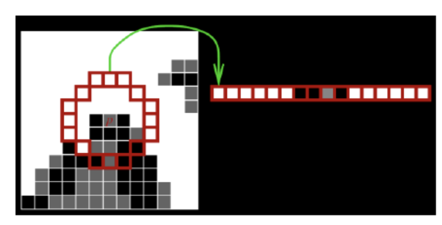
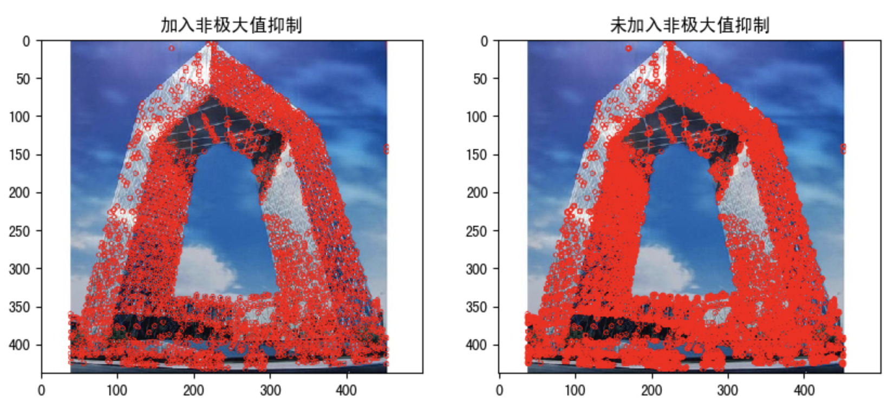
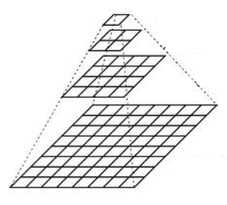
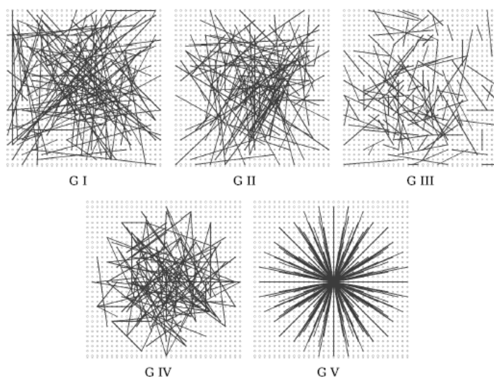
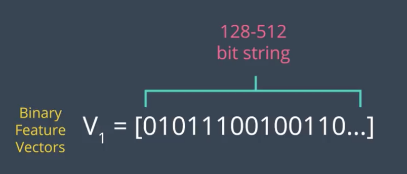
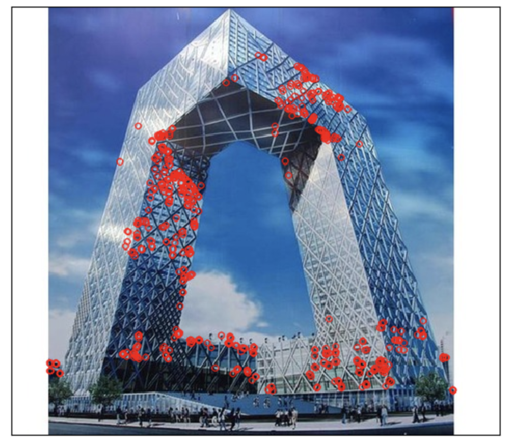

<!DOCTYPE HTML>
<html lang="en" >
    
    <head>
        
        <meta charset="UTF-8">
        <meta http-equiv="X-UA-Compatible" content="IE=edge" />
        <title>4.4 Fast和ORB算法 | 课程介绍</title>
        <meta content="text/html; charset=utf-8" http-equiv="Content-Type">
        <meta name="description" content="">
        <meta name="generator" content="GitBook 2.6.7">
        
        
        <meta name="HandheldFriendly" content="true"/>
        <meta name="viewport" content="width=device-width, initial-scale=1, user-scalable=no">
        <meta name="apple-mobile-web-app-capable" content="yes">
        <meta name="apple-mobile-web-app-status-bar-style" content="black">
        <link rel="apple-touch-icon-precomposed" sizes="152x152" href="../gitbook/images/apple-touch-icon-precomposed-152.png">
        <link rel="shortcut icon" href="../gitbook/images/favicon.ico" type="image/x-icon">
        
    <link rel="stylesheet" href="../gitbook/style.css">
    
        
        <link rel="stylesheet" href="../gitbook/plugins/gitbook-plugin-expandable-chapters/expandable-chapters.css">
        
    
        
        <link rel="stylesheet" href="../gitbook/plugins/gitbook-plugin-katex/katex.min.css">
        
    
        
        <link rel="stylesheet" href="../gitbook/plugins/gitbook-plugin-splitter/splitter.css">
        
    
        
        <link rel="stylesheet" href="../gitbook/plugins/gitbook-plugin-highlight/website.css">
        
    
        
        <link rel="stylesheet" href="../gitbook/plugins/gitbook-plugin-search/search.css">
        
    
        
        <link rel="stylesheet" href="../gitbook/plugins/gitbook-plugin-fontsettings/website.css">
        
    
    

        
    
    
    <link rel="next" href="../图像特征提取与描述/section4.html" />
    
    
    <link rel="prev" href="../图像特征提取与描述/section2.html" />
    

        
    </head>
    <body>
        
        
    <div class="book"
        data-level="4.4"
        data-chapter-title="4.4 Fast和ORB算法"
        data-filepath="图像特征提取与描述/section3.md"
        data-basepath=".."
        data-revision="Thu Apr 02 2020 13:45:40 GMT+0800 (CST)"
        data-innerlanguage="">
    

<div class="book-summary">
    <nav role="navigation">
        <ul class="summary">
            
            
            
            

            

            
    
        <li class="chapter " data-level="0" data-path="index.html">
            
                
                    <a href="../index.html">
                
                        <i class="fa fa-check"></i>
                        
                        Introduction
                    </a>
            
            
        </li>
    
        <li class="chapter " data-level="1" data-path="OpenCV简介/ReadMe.html">
            
                
                    <a href="../OpenCV简介/ReadMe.html">
                
                        <i class="fa fa-check"></i>
                        
                            <b>1.</b>
                        
                        1. OpenCV简介
                    </a>
            
            
            <ul class="articles">
                
    
        <li class="chapter " data-level="1.1" data-path="OpenCV简介/section0.html">
            
                
                    <a href="../OpenCV简介/section0.html">
                
                        <i class="fa fa-check"></i>
                        
                            <b>1.1.</b>
                        
                        1.1 图像处理简介
                    </a>
            
            
        </li>
    
        <li class="chapter " data-level="1.2" data-path="OpenCV简介/section1.html">
            
                
                    <a href="../OpenCV简介/section1.html">
                
                        <i class="fa fa-check"></i>
                        
                            <b>1.2.</b>
                        
                        1.2 OpenCV简介及安装方法
                    </a>
            
            
        </li>
    
        <li class="chapter " data-level="1.3" data-path="OpenCV简介/section2.html">
            
                
                    <a href="../OpenCV简介/section2.html">
                
                        <i class="fa fa-check"></i>
                        
                            <b>1.3.</b>
                        
                        1.3 OpenCV的模块
                    </a>
            
            
        </li>
    

            </ul>
            
        </li>
    
        <li class="chapter " data-level="2" data-path="OpenCV基本操作/ReadMe.html">
            
                
                    <a href="../OpenCV基本操作/ReadMe.html">
                
                        <i class="fa fa-check"></i>
                        
                            <b>2.</b>
                        
                        2 OpenCV基本操作
                    </a>
            
            
            <ul class="articles">
                
    
        <li class="chapter " data-level="2.1" data-path="OpenCV基本操作/section0.html">
            
                
                    <a href="../OpenCV基本操作/section0.html">
                
                        <i class="fa fa-check"></i>
                        
                            <b>2.1.</b>
                        
                        2.1 图像的基础操作
                    </a>
            
            
        </li>
    
        <li class="chapter " data-level="2.2" data-path="OpenCV基本操作/section1.html">
            
                
                    <a href="../OpenCV基本操作/section1.html">
                
                        <i class="fa fa-check"></i>
                        
                            <b>2.2.</b>
                        
                        2.2 算数操作
                    </a>
            
            
        </li>
    

            </ul>
            
        </li>
    
        <li class="chapter " data-level="3" data-path="OpenCV图像处理/ReadMe.html">
            
                
                    <a href="../OpenCV图像处理/ReadMe.html">
                
                        <i class="fa fa-check"></i>
                        
                            <b>3.</b>
                        
                        3 OpenCV图像处理
                    </a>
            
            
            <ul class="articles">
                
    
        <li class="chapter " data-level="3.1" data-path="OpenCV图像处理/section0.html">
            
                
                    <a href="../OpenCV图像处理/section0.html">
                
                        <i class="fa fa-check"></i>
                        
                            <b>3.1.</b>
                        
                        3.1 几何变换
                    </a>
            
            
        </li>
    
        <li class="chapter " data-level="3.2" data-path="OpenCV图像处理/section1.html">
            
                
                    <a href="../OpenCV图像处理/section1.html">
                
                        <i class="fa fa-check"></i>
                        
                            <b>3.2.</b>
                        
                        3.2 形态学操作
                    </a>
            
            
        </li>
    
        <li class="chapter " data-level="3.3" data-path="OpenCV图像处理/section2.html">
            
                
                    <a href="../OpenCV图像处理/section2.html">
                
                        <i class="fa fa-check"></i>
                        
                            <b>3.3.</b>
                        
                        3.3 图像平滑
                    </a>
            
            
        </li>
    
        <li class="chapter " data-level="3.4" data-path="OpenCV图像处理/section3.html">
            
                
                    <a href="../OpenCV图像处理/section3.html">
                
                        <i class="fa fa-check"></i>
                        
                            <b>3.4.</b>
                        
                        3.4 直方图
                    </a>
            
            
        </li>
    
        <li class="chapter " data-level="3.5" data-path="OpenCV图像处理/section4.html">
            
                
                    <a href="../OpenCV图像处理/section4.html">
                
                        <i class="fa fa-check"></i>
                        
                            <b>3.5.</b>
                        
                        3.5 边缘检测
                    </a>
            
            
        </li>
    
        <li class="chapter " data-level="3.6" data-path="OpenCV图像处理/section5.html">
            
                
                    <a href="../OpenCV图像处理/section5.html">
                
                        <i class="fa fa-check"></i>
                        
                            <b>3.6.</b>
                        
                        3.6 模版匹配和霍夫变换
                    </a>
            
            
        </li>
    
        <li class="chapter " data-level="3.7" data-path="OpenCV图像处理/section6.html">
            
                
                    <a href="../OpenCV图像处理/section6.html">
                
                        <i class="fa fa-check"></i>
                        
                            <b>3.7.</b>
                        
                        3.7 图像变换-傅里叶变换
                    </a>
            
            
        </li>
    
        <li class="chapter " data-level="3.8" data-path="OpenCV图像处理/section7.html">
            
                
                    <a href="../OpenCV图像处理/section7.html">
                
                        <i class="fa fa-check"></i>
                        
                            <b>3.8.</b>
                        
                        3.8 轮廓检测
                    </a>
            
            
        </li>
    
        <li class="chapter " data-level="3.9" data-path="OpenCV图像处理/section8.html">
            
                
                    <a href="../OpenCV图像处理/section8.html">
                
                        <i class="fa fa-check"></i>
                        
                            <b>3.9.</b>
                        
                        3.9 图像分割
                    </a>
            
            
        </li>
    

            </ul>
            
        </li>
    
        <li class="chapter " data-level="4" data-path="图像特征提取与描述/ReadMe.html">
            
                
                    <a href="../图像特征提取与描述/ReadMe.html">
                
                        <i class="fa fa-check"></i>
                        
                            <b>4.</b>
                        
                        4 图像特征提取与描述
                    </a>
            
            
            <ul class="articles">
                
    
        <li class="chapter " data-level="4.1" data-path="图像特征提取与描述/section0.html">
            
                
                    <a href="../图像特征提取与描述/section0.html">
                
                        <i class="fa fa-check"></i>
                        
                            <b>4.1.</b>
                        
                        4.1 角点特征
                    </a>
            
            
        </li>
    
        <li class="chapter " data-level="4.2" data-path="图像特征提取与描述/section1.html">
            
                
                    <a href="../图像特征提取与描述/section1.html">
                
                        <i class="fa fa-check"></i>
                        
                            <b>4.2.</b>
                        
                        4.2 Harris和Shi-Tomas算法
                    </a>
            
            
        </li>
    
        <li class="chapter " data-level="4.3" data-path="图像特征提取与描述/section2.html">
            
                
                    <a href="../图像特征提取与描述/section2.html">
                
                        <i class="fa fa-check"></i>
                        
                            <b>4.3.</b>
                        
                        4.3 SIFT/SURF算法
                    </a>
            
            
        </li>
    
        <li class="chapter active" data-level="4.4" data-path="图像特征提取与描述/section3.html">
            
                
                    <a href="../图像特征提取与描述/section3.html">
                
                        <i class="fa fa-check"></i>
                        
                            <b>4.4.</b>
                        
                        4.4 Fast和ORB算法
                    </a>
            
            
        </li>
    
        <li class="chapter " data-level="4.5" data-path="图像特征提取与描述/section4.html">
            
                
                    <a href="../图像特征提取与描述/section4.html">
                
                        <i class="fa fa-check"></i>
                        
                            <b>4.5.</b>
                        
                        4.5 LBP和HOG特征算子
                    </a>
            
            
        </li>
    

            </ul>
            
        </li>
    
        <li class="chapter " data-level="5" data-path="视频操作/ReadMe.html">
            
                
                    <a href="../视频操作/ReadMe.html">
                
                        <i class="fa fa-check"></i>
                        
                            <b>5.</b>
                        
                        5 视频操作
                    </a>
            
            
            <ul class="articles">
                
    
        <li class="chapter " data-level="5.1" data-path="视频操作/section0.html">
            
                
                    <a href="../视频操作/section0.html">
                
                        <i class="fa fa-check"></i>
                        
                            <b>5.1.</b>
                        
                        5.1 视频读写
                    </a>
            
            
        </li>
    
        <li class="chapter " data-level="5.2" data-path="视频操作/section1.html">
            
                
                    <a href="../视频操作/section1.html">
                
                        <i class="fa fa-check"></i>
                        
                            <b>5.2.</b>
                        
                        5.2 视频追踪
                    </a>
            
            
        </li>
    

            </ul>
            
        </li>
    
        <li class="chapter " data-level="6" data-path="案例/ReadMe.html">
            
                
                    <a href="../案例/ReadMe.html">
                
                        <i class="fa fa-check"></i>
                        
                            <b>6.</b>
                        
                        6 案例:人脸案例
                    </a>
            
            
        </li>
    


            
            <li class="divider"></li>
            <li>
                <a href="https://www.gitbook.com" target="blank" class="gitbook-link">
                    Published with GitBook
                </a>
            </li>
            
        </ul>
    </nav>
</div>

    <div class="book-body">
        <div class="body-inner">
            <div class="book-header" role="navigation">
    <!-- Actions Left -->
    

    <!-- Title -->
    <h1>
        <i class="fa fa-circle-o-notch fa-spin"></i>
        <a href="../" >课程介绍</a>
    </h1>
</div>

            <div class="page-wrapper" tabindex="-1" role="main">
                <div class="page-inner">
                
                
                    <section class="normal" id="section-">
                    
                        <h1 id="fast&#x548C;orb&#x7B97;&#x6CD5;">Fast&#x548C;ORB&#x7B97;&#x6CD5;</h1>
<p><strong>&#x5B66;&#x4E60;&#x76EE;&#x6807;</strong></p>
<ul>
<li>&#x7406;&#x89E3;Fast&#x7B97;&#x6CD5;&#x89D2;&#x70B9;&#x68C0;&#x6D4B;&#x7684;&#x539F;&#x7406;&#xFF0C;&#x80FD;&#x591F;&#x5B8C;&#x6210;&#x89D2;&#x70B9;&#x68C0;&#x6D4B;</li>
<li>&#x7406;&#x89E3;ORB&#x7B97;&#x6CD5;&#x7684;&#x539F;&#x7406;&#xFF0C;&#x80FD;&#x591F;&#x5B8C;&#x6210;&#x7279;&#x5F81;&#x70B9;&#x68C0;&#x6D4B;</li>
</ul>
<hr>
<h1 id="1-fast&#x7B97;&#x6CD5;">1 Fast&#x7B97;&#x6CD5;</h1>
<h2 id="11-&#x539F;&#x7406;">1.1 &#x539F;&#x7406;</h2>
<p>&#x6211;&#x4EEC;&#x524D;&#x9762;&#x5DF2;&#x7ECF;&#x4ECB;&#x7ECD;&#x8FC7;&#x51E0;&#x4E2A;&#x7279;&#x5F81;&#x68C0;&#x6D4B;&#x5668;&#xFF0C;&#x5B83;&#x4EEC;&#x7684;&#x6548;&#x679C;&#x90FD;&#x5F88;&#x597D;&#xFF0C;&#x7279;&#x522B;&#x662F;SIFT&#x548C;SURF&#x7B97;&#x6CD5;&#xFF0C;&#x4F46;&#x662F;&#x4ECE;&#x5B9E;&#x65F6;&#x5904;&#x7406;&#x7684;&#x89D2;&#x5EA6;&#x6765;&#x770B;&#xFF0C;&#x6548;&#x7387;&#x8FD8;&#x662F;&#x592A;&#x4F4E;&#x4E86;&#x3002;&#x4E3A;&#x4E86;&#x89E3;&#x51B3;&#x8FD9;&#x4E2A;&#x95EE;&#x9898;&#xFF0C;Edward Rosten&#x548C;Tom Drummond&#x5728;2006&#x5E74;&#x63D0;&#x51FA;&#x4E86;FAST&#x7B97;&#x6CD5;&#xFF0C;&#x5E76;&#x5728;2010&#x5E74;&#x5BF9;&#x5176;&#x8FDB;&#x884C;&#x4E86;&#x4FEE;&#x6B63;&#x3002;</p>
<p><strong>FAST</strong> (&#x5168;&#x79F0;Features from accelerated segment test)&#x662F;&#x4E00;&#x79CD;&#x7528;&#x4E8E;&#x89D2;&#x70B9;&#x68C0;&#x6D4B;&#x7684;&#x7B97;&#x6CD5;&#xFF0C;&#x8BE5;&#x7B97;&#x6CD5;&#x7684;&#x539F;&#x7406;&#x662F;&#x53D6;&#x56FE;&#x50CF;&#x4E2D;&#x68C0;&#x6D4B;&#x70B9;&#xFF0C;&#x4EE5;&#x8BE5;&#x70B9;&#x4E3A;&#x5706;&#x5FC3;&#x7684;&#x5468;&#x56F4;&#x90BB;&#x57DF;&#x5185;&#x50CF;&#x7D20;&#x70B9;&#x5224;&#x65AD;&#x68C0;&#x6D4B;&#x70B9;&#x662F;&#x5426;&#x4E3A;&#x89D2;&#x70B9;&#xFF0C;&#x901A;&#x4FD7;&#x7684;&#x8BB2;&#x5C31;&#x662F;<strong>&#x82E5;&#x4E00;&#x4E2A;&#x50CF;&#x7D20;&#x5468;&#x56F4;&#x6709;&#x4E00;&#x5B9A;&#x6570;&#x91CF;&#x7684;&#x50CF;&#x7D20;&#x4E0E;&#x8BE5;&#x70B9;&#x50CF;&#x7D20;&#x503C;&#x4E0D;&#x540C;&#xFF0C;&#x5219;&#x8BA4;&#x4E3A;&#x5176;&#x4E3A;&#x89D2;&#x70B9;</strong>&#x3002;</p>
<h3 id="111-fast&#x7B97;&#x6CD5;&#x7684;&#x57FA;&#x672C;&#x6D41;&#x7A0B;">1.1.1 <strong>FAST&#x7B97;&#x6CD5;&#x7684;&#x57FA;&#x672C;&#x6D41;&#x7A0B;</strong></h3>
<ol>
<li><p>&#x5728;&#x56FE;&#x50CF;&#x4E2D;&#x9009;&#x53D6;&#x4E00;&#x4E2A;&#x50CF;&#x7D20;&#x70B9; p&#xFF0C;&#x6765;&#x5224;&#x65AD;&#x5B83;&#x662F;&#x4E0D;&#x662F;&#x5173;&#x952E;&#x70B9;&#x3002;<span class="katex"><span class="katex-mathml"><math><semantics><mrow><msub><mi>I</mi><mi>p</mi></msub></mrow><annotation encoding="application/x-tex">I_p</annotation></semantics></math></span><span class="katex-html" aria-hidden="true"><span class="strut" style="height:0.68333em;"></span><span class="strut bottom" style="height:0.969438em;vertical-align:-0.286108em;"></span><span class="base textstyle uncramped"><span class="mord"><span class="mord mathit" style="margin-right:0.07847em;">I</span><span class="msupsub"><span class="vlist"><span style="top:0.15em;margin-right:0.05em;margin-left:-0.07847em;"><span class="fontsize-ensurer reset-size5 size5"><span style="font-size:0em;">&#x200B;</span></span><span class="reset-textstyle scriptstyle cramped mtight"><span class="mord mathit mtight">p</span></span></span><span class="baseline-fix"><span class="fontsize-ensurer reset-size5 size5"><span style="font-size:0em;">&#x200B;</span></span>&#x200B;</span></span></span></span></span></span></span>&#x7B49;&#x4E8E;&#x50CF;&#x7D20;&#x70B9; p&#x7684;&#x7070;&#x5EA6;&#x503C;&#x3002;</p>
</li>
<li><p>&#x4EE5;r&#x4E3A;&#x534A;&#x5F84;&#x753B;&#x5706;&#xFF0C;&#x8986;&#x76D6;p&#x70B9;&#x5468;&#x56F4;&#x7684;M&#x4E2A;&#x50CF;&#x7D20;&#xFF0C;&#x901A;&#x5E38;&#x60C5;&#x72C2;&#x4E0B;&#xFF0C;&#x8BBE;&#x7F6E; r=3&#xFF0C;&#x5219; M=16&#xFF0C;&#x5982;&#x4E0B;&#x56FE;&#x6240;&#x793A;&#xFF1A;</p>
<p></p>
</li>
<li><p>&#x8BBE;&#x7F6E;&#x4E00;&#x4E2A;&#x9608;&#x503C;t&#xFF0C;&#x5982;&#x679C;&#x5728;&#x8FD9; 16 &#x4E2A;&#x50CF;&#x7D20;&#x70B9;&#x4E2D;&#x5B58;&#x5728; n &#x4E2A;&#x8FDE;&#x7EED;&#x50CF;&#x7D20;&#x70B9;&#x7684;&#x7070;&#x5EA6;&#x503C;&#x90FD;&#x9AD8;&#x4E8E;<span class="katex"><span class="katex-mathml"><math><semantics><mrow><msub><mi>I</mi><mi>p</mi></msub><mo>+</mo><mi>t</mi></mrow><annotation encoding="application/x-tex">I_p + t</annotation></semantics></math></span><span class="katex-html" aria-hidden="true"><span class="strut" style="height:0.68333em;"></span><span class="strut bottom" style="height:0.969438em;vertical-align:-0.286108em;"></span><span class="base textstyle uncramped"><span class="mord"><span class="mord mathit" style="margin-right:0.07847em;">I</span><span class="msupsub"><span class="vlist"><span style="top:0.15em;margin-right:0.05em;margin-left:-0.07847em;"><span class="fontsize-ensurer reset-size5 size5"><span style="font-size:0em;">&#x200B;</span></span><span class="reset-textstyle scriptstyle cramped mtight"><span class="mord mathit mtight">p</span></span></span><span class="baseline-fix"><span class="fontsize-ensurer reset-size5 size5"><span style="font-size:0em;">&#x200B;</span></span>&#x200B;</span></span></span></span><span class="mbin">+</span><span class="mord mathit">t</span></span></span></span>&#xFF0C;&#x6216;&#x8005;&#x4F4E;&#x4E8E;<span class="katex"><span class="katex-mathml"><math><semantics><mrow><msub><mi>I</mi><mi>p</mi></msub><mo>&#x2212;</mo><mi>t</mi></mrow><annotation encoding="application/x-tex">I_p - t</annotation></semantics></math></span><span class="katex-html" aria-hidden="true"><span class="strut" style="height:0.68333em;"></span><span class="strut bottom" style="height:0.969438em;vertical-align:-0.286108em;"></span><span class="base textstyle uncramped"><span class="mord"><span class="mord mathit" style="margin-right:0.07847em;">I</span><span class="msupsub"><span class="vlist"><span style="top:0.15em;margin-right:0.05em;margin-left:-0.07847em;"><span class="fontsize-ensurer reset-size5 size5"><span style="font-size:0em;">&#x200B;</span></span><span class="reset-textstyle scriptstyle cramped mtight"><span class="mord mathit mtight">p</span></span></span><span class="baseline-fix"><span class="fontsize-ensurer reset-size5 size5"><span style="font-size:0em;">&#x200B;</span></span>&#x200B;</span></span></span></span><span class="mbin">&#x2212;</span><span class="mord mathit">t</span></span></span></span>&#xFF0C;&#x90A3;&#x4E48;&#x50CF;&#x7D20;&#x70B9; p &#x5C31;&#x88AB;&#x8BA4;&#x4E3A;&#x662F;&#x4E00;&#x4E2A;&#x89D2;&#x70B9;&#x3002;&#x5982;&#x4E0A;&#x56FE;&#x4E2D;&#x7684;&#x865A;&#x7EBF;&#x6240;&#x793A;&#xFF0C;n &#x4E00;&#x822C;&#x53D6;&#x503C;&#x4E3A; 12&#x3002;</p>
</li>
<li><p>&#x7531;&#x4E8E;&#x5728;&#x68C0;&#x6D4B;&#x7279;&#x5F81;&#x70B9;&#x65F6;&#x662F;&#x9700;&#x8981;&#x5BF9;&#x56FE;&#x50CF;&#x4E2D;&#x6240;&#x6709;&#x7684;&#x50CF;&#x7D20;&#x70B9;&#x8FDB;&#x884C;&#x68C0;&#x6D4B;&#xFF0C;&#x7136;&#x800C;&#x56FE;&#x50CF;&#x4E2D;&#x7684;&#x7EDD;&#x5927;&#x591A;&#x6570;&#x70B9;&#x90FD;&#x4E0D;&#x662F;&#x7279;&#x5F81;&#x70B9;&#xFF0C;&#x5982;&#x679C;&#x5BF9;&#x6BCF;&#x4E2A;&#x50CF;&#x7D20;&#x70B9;&#x90FD;&#x8FDB;&#x884C;&#x4E0A;&#x8FF0;&#x7684;&#x68C0;&#x6D4B;&#x8FC7;&#x7A0B;&#xFF0C;&#x90A3;&#x663E;&#x7136;&#x4F1A;&#x6D6A;&#x8D39;&#x8BB8;&#x591A;&#x65F6;&#x95F4;&#xFF0C;&#x56E0;&#x6B64;&#x91C7;&#x7528;&#x4E00;&#x79CD;&#x8FDB;&#x884C;<strong>&#x975E;&#x7279;&#x5F81;&#x70B9;&#x5224;&#x522B;</strong>&#x7684;&#x65B9;&#x6CD5;&#xFF1A;&#x9996;&#x5148;&#x5BF9;&#x5019;&#x9009;&#x70B9;&#x7684;&#x5468;&#x56F4;&#x6BCF;&#x4E2A; 90 &#x5EA6;&#x7684;&#x70B9;&#xFF1A;1&#xFF0C;9&#xFF0C;5&#xFF0C;13 &#x8FDB;&#x884C;&#x6D4B;&#x8BD5;&#xFF08;&#x5148;&#x6D4B;&#x8BD5; 1 &#x548C; 19, &#x5982;&#x679C;&#x5B83;&#x4EEC;&#x7B26;&#x5408;&#x9608;&#x503C;&#x8981;&#x6C42;&#x518D;&#x6D4B;&#x8BD5; 5 &#x548C; 13&#xFF09;&#x3002;&#x5982;&#x679C; p &#x662F;&#x89D2;&#x70B9;&#xFF0C;&#x90A3;&#x4E48;&#x8FD9;&#x56DB;&#x4E2A;&#x70B9;&#x4E2D;&#x81F3;&#x5C11;&#x6709; 3 &#x4E2A;&#x8981;&#x7B26;&#x5408;&#x9608;&#x503C;&#x8981;&#x6C42;&#xFF0C;&#x5426;&#x5219;&#x76F4;&#x63A5;&#x5254;&#x9664;&#x3002;&#x5BF9;&#x4FDD;&#x7559;&#x4E0B;&#x6765;&#x7684;&#x70B9;&#x518D;&#x7EE7;&#x7EED;&#x8FDB;&#x884C;&#x6D4B;&#x8BD5;&#xFF08;&#x662F;&#x5426;&#x6709; 12 &#x7684;&#x70B9;&#x7B26;&#x5408;&#x9608;&#x503C;&#x8981;&#x6C42;&#xFF09;&#x3002; </p>
</li>
</ol>
<p>&#x867D;&#x7136;&#x8FD9;&#x4E2A;&#x68C0;&#x6D4B;&#x5668;&#x7684;&#x6548;&#x7387;&#x5F88;&#x9AD8;&#xFF0C;&#x4F46;&#x5B83;&#x6709;&#x4EE5;&#x4E0B;&#x51E0;&#x6761;&#x7F3A;&#x70B9;&#xFF1A;</p>
<ul>
<li>&#x83B7;&#x5F97;&#x7684;&#x5019;&#x9009;&#x70B9;&#x6BD4;&#x8F83;&#x591A;</li>
<li>&#x7279;&#x5F81;&#x70B9;&#x7684;&#x9009;&#x53D6;&#x4E0D;&#x662F;&#x6700;&#x4F18;&#x7684;&#xFF0C;&#x56E0;&#x4E3A;&#x5B83;&#x7684;&#x6548;&#x679C;&#x53D6;&#x51B3;&#x4E0E;&#x8981;&#x89E3;&#x51B3;&#x7684;&#x95EE;&#x9898;&#x548C;&#x89D2;&#x70B9;&#x7684;&#x5206;&#x5E03;&#x60C5;&#x51B5;&#x3002;</li>
<li>&#x8FDB;&#x884C;&#x975E;&#x7279;&#x5F81;&#x70B9;&#x5224;&#x522B;&#x65F6;&#x5927;&#x91CF;&#x7684;&#x70B9;&#x88AB;&#x4E22;&#x5F03;</li>
<li>&#x68C0;&#x6D4B;&#x5230;&#x7684;&#x5F88;&#x591A;&#x7279;&#x5F81;&#x70B9;&#x90FD;&#x662F;&#x76F8;&#x90BB;&#x7684;</li>
</ul>
<p>&#x524D; 3 &#x4E2A;&#x95EE;&#x9898;&#x53EF;&#x4EE5;&#x901A;&#x8FC7;&#x673A;&#x5668;&#x5B66;&#x4E60;&#x7684;&#x65B9;&#x6CD5;&#x89E3;&#x51B3;&#xFF0C;&#x6700;&#x540E;&#x4E00;&#x4E2A;&#x95EE;&#x9898;&#x53EF;&#x4EE5;&#x4F7F;&#x7528;&#x975E;&#x6700;&#x5927;&#x503C;&#x6291;&#x5236;&#x7684;&#x65B9;&#x6CD5;&#x89E3;&#x51B3;&#x3002;</p>
<h3 id="112&#x673A;&#x5668;&#x5B66;&#x4E60;&#x7684;&#x89D2;&#x70B9;&#x68C0;&#x6D4B;&#x5668;"><strong>1.1.2&#x673A;&#x5668;&#x5B66;&#x4E60;&#x7684;&#x89D2;&#x70B9;&#x68C0;&#x6D4B;&#x5668;</strong></h3>
<ol>
<li><p>&#x9009;&#x62E9;&#x4E00;&#x7EC4;&#x8BAD;&#x7EC3;&#x56FE;&#x7247;&#xFF08;&#x6700;&#x597D;&#x662F;&#x8DDF;&#x6700;&#x540E;&#x5E94;&#x7528;&#x76F8;&#x5173;&#x7684;&#x56FE;&#x7247;&#xFF09;</p>
</li>
<li><p>&#x4F7F;&#x7528; FAST &#x7B97;&#x6CD5;&#x627E;&#x51FA;&#x6BCF;&#x5E45;&#x56FE;&#x50CF;&#x7684;&#x7279;&#x5F81;&#x70B9;&#xFF0C;&#x5BF9;&#x56FE;&#x50CF;&#x4E2D;&#x7684;&#x6BCF;&#x4E00;&#x4E2A;&#x7279;&#x5F81;&#x70B9;&#xFF0C;&#x5C06;&#x5176;&#x5468;&#x56F4;&#x7684; 16 &#x4E2A;&#x50CF;&#x7D20;&#x5B58;&#x50A8;&#x6784;&#x6210;&#x4E00;&#x4E2A;&#x5411;&#x91CF;P&#x3002;</p>
<p></p>
</li>
<li><p>&#x6BCF;&#x4E00;&#x4E2A;&#x7279;&#x5F81;&#x70B9;&#x7684; 16 &#x50CF;&#x7D20;&#x70B9;&#x90FD;&#x5C5E;&#x4E8E;&#x4E0B;&#x5217;&#x4E09;&#x7C7B;&#x4E2D;&#x7684;&#x4E00;&#x79CD;</p>
<p></p>
</li>
<li><p>&#x6839;&#x636E;&#x8FD9;&#x4E9B;&#x50CF;&#x7D20;&#x70B9;&#x7684;&#x5206;&#x7C7B;&#xFF0C;&#x7279;&#x5F81;&#x5411;&#x91CF; P &#x4E5F;&#x88AB;&#x5206;&#x4E3A; 3 &#x4E2A;&#x5B50;&#x96C6;&#xFF1A;Pd &#xFF0C;Ps &#xFF0C;Pb&#xFF0C;</p>
</li>
<li><p>&#x5B9A;&#x4E49;&#x4E00;&#x4E2A;&#x65B0;&#x7684;&#x5E03;&#x5C14;&#x53D8;&#x91CF;<span class="katex"><span class="katex-mathml"><math><semantics><mrow><msub><mi>K</mi><mi>p</mi></msub></mrow><annotation encoding="application/x-tex">K_p</annotation></semantics></math></span><span class="katex-html" aria-hidden="true"><span class="strut" style="height:0.68333em;"></span><span class="strut bottom" style="height:0.969438em;vertical-align:-0.286108em;"></span><span class="base textstyle uncramped"><span class="mord"><span class="mord mathit" style="margin-right:0.07153em;">K</span><span class="msupsub"><span class="vlist"><span style="top:0.15em;margin-right:0.05em;margin-left:-0.07153em;"><span class="fontsize-ensurer reset-size5 size5"><span style="font-size:0em;">&#x200B;</span></span><span class="reset-textstyle scriptstyle cramped mtight"><span class="mord mathit mtight">p</span></span></span><span class="baseline-fix"><span class="fontsize-ensurer reset-size5 size5"><span style="font-size:0em;">&#x200B;</span></span>&#x200B;</span></span></span></span></span></span></span>&#xFF0C;&#x5982;&#x679C; p &#x662F;&#x89D2;&#x70B9;&#x5C31;&#x8BBE;&#x7F6E;&#x4E3A; Ture&#xFF0C;&#x5982;&#x679C;&#x4E0D;&#x662F;&#x5C31;&#x8BBE;&#x7F6E;&#x4E3A; False&#x3002;</p>
</li>
<li><p>&#x5229;&#x7528;&#x7279;&#x5F81;&#x503C;&#x5411;&#x91CF;p&#xFF0C;&#x76EE;&#x6807;&#x503C;&#x662F;$K_p$&#xFF0C;&#x8BAD;&#x7EC3;ID3 &#x6811;&#xFF08;&#x51B3;&#x7B56;&#x6811;&#x5206;&#x7C7B;&#x5668;&#xFF09;&#x3002;</p>
</li>
<li><p>&#x5C06;&#x6784;&#x5EFA;&#x597D;&#x7684;&#x51B3;&#x7B56;&#x6811;&#x8FD0;&#x7528;&#x4E8E;&#x5176;&#x4ED6;&#x56FE;&#x50CF;&#x7684;&#x5FEB;&#x901F;&#x7684;&#x68C0;&#x6D4B;&#x3002;</p>
</li>
</ol>
<h3 id="113-&#x975E;&#x6781;&#x5927;&#x503C;&#x6291;&#x5236;">1.1.3 <strong>&#x975E;&#x6781;&#x5927;&#x503C;&#x6291;&#x5236;</strong></h3>
<p><strong>&#x5728;&#x7B5B;&#x9009;&#x51FA;&#x6765;&#x7684;&#x5019;&#x9009;&#x89D2;&#x70B9;&#x4E2D;&#x6709;&#x5F88;&#x591A;&#x662F;&#x7D27;&#x6328;&#x5728;&#x4E00;&#x8D77;&#x7684;&#xFF0C;&#x9700;&#x8981;&#x901A;&#x8FC7;&#x975E;&#x6781;&#x5927;&#x503C;&#x6291;&#x5236;&#x6765;&#x6D88;&#x9664;&#x8FD9;&#x79CD;&#x5F71;&#x54CD;&#x3002;</strong></p>
<p>&#x4E3A;&#x6240;&#x6709;&#x7684;&#x5019;&#x9009;&#x89D2;&#x70B9;&#x90FD;&#x786E;&#x5B9A;&#x4E00;&#x4E2A;&#x6253;&#x5206;&#x51FD;&#x6570;<span class="katex"><span class="katex-mathml"><math><semantics><mrow><mi>V</mi></mrow><annotation encoding="application/x-tex">V </annotation></semantics></math></span><span class="katex-html" aria-hidden="true"><span class="strut" style="height:0.68333em;"></span><span class="strut bottom" style="height:0.68333em;vertical-align:0em;"></span><span class="base textstyle uncramped"><span class="mord mathit" style="margin-right:0.22222em;">V</span></span></span></span> &#xFF0C; <span class="katex"><span class="katex-mathml"><math><semantics><mrow><mi>V</mi></mrow><annotation encoding="application/x-tex">V </annotation></semantics></math></span><span class="katex-html" aria-hidden="true"><span class="strut" style="height:0.68333em;"></span><span class="strut bottom" style="height:0.68333em;vertical-align:0em;"></span><span class="base textstyle uncramped"><span class="mord mathit" style="margin-right:0.22222em;">V</span></span></span></span>&#x7684;&#x503C;&#x53EF;&#x8FD9;&#x6837;&#x8BA1;&#x7B97;&#xFF1A;&#x5148;&#x5206;&#x522B;&#x8BA1;&#x7B97;<span class="katex"><span class="katex-mathml"><math><semantics><mrow><msub><mi>I</mi><mi>p</mi></msub></mrow><annotation encoding="application/x-tex">I_p</annotation></semantics></math></span><span class="katex-html" aria-hidden="true"><span class="strut" style="height:0.68333em;"></span><span class="strut bottom" style="height:0.969438em;vertical-align:-0.286108em;"></span><span class="base textstyle uncramped"><span class="mord"><span class="mord mathit" style="margin-right:0.07847em;">I</span><span class="msupsub"><span class="vlist"><span style="top:0.15em;margin-right:0.05em;margin-left:-0.07847em;"><span class="fontsize-ensurer reset-size5 size5"><span style="font-size:0em;">&#x200B;</span></span><span class="reset-textstyle scriptstyle cramped mtight"><span class="mord mathit mtight">p</span></span></span><span class="baseline-fix"><span class="fontsize-ensurer reset-size5 size5"><span style="font-size:0em;">&#x200B;</span></span>&#x200B;</span></span></span></span></span></span></span>&#x4E0E;&#x5706;&#x4E0A;16&#x4E2A;&#x70B9;&#x7684;&#x50CF;&#x7D20;&#x503C;&#x5DEE;&#x503C;&#xFF0C;&#x53D6;&#x7EDD;&#x5BF9;&#x503C;&#xFF0C;&#x518D;&#x5C06;&#x8FD9;16&#x4E2A;&#x7EDD;&#x5BF9;&#x503C;&#x76F8;&#x52A0;&#xFF0C;&#x5C31;&#x5F97;&#x5230;&#x4E86;<span class="katex"><span class="katex-mathml"><math><semantics><mrow><mi>V</mi></mrow><annotation encoding="application/x-tex">V </annotation></semantics></math></span><span class="katex-html" aria-hidden="true"><span class="strut" style="height:0.68333em;"></span><span class="strut bottom" style="height:0.68333em;vertical-align:0em;"></span><span class="base textstyle uncramped"><span class="mord mathit" style="margin-right:0.22222em;">V</span></span></span></span>&#x7684;&#x503C;
<span class="katex-display"><span class="katex"><span class="katex-mathml"><math><semantics><mrow><mi>V</mi><mo>=</mo><msubsup><mo>&#x2211;</mo><mrow><mi>i</mi></mrow><mrow><mn>1</mn><mn>6</mn></mrow></msubsup><mi mathvariant="normal">&#x2223;</mi><msub><mi>I</mi><mi>p</mi></msub><mo>&#x2212;</mo><msub><mi>I</mi><mi>i</mi></msub><mi mathvariant="normal">&#x2223;</mi></mrow><annotation encoding="application/x-tex">
V = \sum_{i}^{16}|I_p-I_i|
</annotation></semantics></math></span><span class="katex-html" aria-hidden="true"><span class="strut" style="height:1.8011130000000004em;"></span><span class="strut bottom" style="height:3.0787820000000004em;vertical-align:-1.277669em;"></span><span class="base displaystyle textstyle uncramped"><span class="mord mathit" style="margin-right:0.22222em;">V</span><span class="mrel">=</span><span class="mop op-limits"><span class="vlist"><span style="top:1.1776689999999999em;margin-left:0em;"><span class="fontsize-ensurer reset-size5 size5"><span style="font-size:0em;">&#x200B;</span></span><span class="reset-textstyle scriptstyle cramped mtight"><span class="mord scriptstyle cramped mtight"><span class="mord mathit mtight">i</span></span></span></span><span style="top:-0.000005000000000143778em;"><span class="fontsize-ensurer reset-size5 size5"><span style="font-size:0em;">&#x200B;</span></span><span><span class="mop op-symbol large-op">&#x2211;</span></span></span><span style="top:-1.2500050000000003em;margin-left:0em;"><span class="fontsize-ensurer reset-size5 size5"><span style="font-size:0em;">&#x200B;</span></span><span class="reset-textstyle scriptstyle uncramped mtight"><span class="mord scriptstyle uncramped mtight"><span class="mord mathrm mtight">1</span><span class="mord mathrm mtight">6</span></span></span></span><span class="baseline-fix"><span class="fontsize-ensurer reset-size5 size5"><span style="font-size:0em;">&#x200B;</span></span>&#x200B;</span></span></span><span class="mord mathrm">&#x2223;</span><span class="mord"><span class="mord mathit" style="margin-right:0.07847em;">I</span><span class="msupsub"><span class="vlist"><span style="top:0.15em;margin-right:0.05em;margin-left:-0.07847em;"><span class="fontsize-ensurer reset-size5 size5"><span style="font-size:0em;">&#x200B;</span></span><span class="reset-textstyle scriptstyle cramped mtight"><span class="mord mathit mtight">p</span></span></span><span class="baseline-fix"><span class="fontsize-ensurer reset-size5 size5"><span style="font-size:0em;">&#x200B;</span></span>&#x200B;</span></span></span></span><span class="mbin">&#x2212;</span><span class="mord"><span class="mord mathit" style="margin-right:0.07847em;">I</span><span class="msupsub"><span class="vlist"><span style="top:0.15em;margin-right:0.05em;margin-left:-0.07847em;"><span class="fontsize-ensurer reset-size5 size5"><span style="font-size:0em;">&#x200B;</span></span><span class="reset-textstyle scriptstyle cramped mtight"><span class="mord mathit mtight">i</span></span></span><span class="baseline-fix"><span class="fontsize-ensurer reset-size5 size5"><span style="font-size:0em;">&#x200B;</span></span>&#x200B;</span></span></span></span><span class="mord mathrm">&#x2223;</span></span></span></span></span>
&#x6700;&#x540E;&#x6BD4;&#x8F83;&#x6BD7;&#x90BB;&#x5019;&#x9009;&#x89D2;&#x70B9;&#x7684; V &#x503C;&#xFF0C;&#x628A;V&#x503C;&#x8F83;&#x5C0F;&#x7684;&#x5019;&#x9009;&#x89D2;&#x70B9;pass&#x6389;&#x3002;</p>
<p>FAST&#x7B97;&#x6CD5;&#x7684;&#x601D;&#x60F3;&#x4E0E;&#x6211;&#x4EEC;&#x5BF9;&#x89D2;&#x70B9;&#x7684;&#x76F4;&#x89C2;&#x8BA4;&#x8BC6;&#x975E;&#x5E38;&#x63A5;&#x8FD1;&#xFF0C;&#x5316;&#x7E41;&#x4E3A;&#x7B80;&#x3002;FAST&#x7B97;&#x6CD5;&#x6BD4;&#x5176;&#x5B83;&#x89D2;&#x70B9;&#x7684;&#x68C0;&#x6D4B;&#x7B97;&#x6CD5;&#x5FEB;&#xFF0C;&#x4F46;&#x662F;&#x5728;&#x566A;&#x58F0;&#x8F83;&#x9AD8;&#x65F6;&#x4E0D;&#x591F;&#x7A33;&#x5B9A;&#xFF0C;&#x8FD9;&#x9700;&#x8981;&#x8BBE;&#x7F6E;&#x5408;&#x9002;&#x7684;&#x9608;&#x503C;&#x3002;</p>
<h2 id="12-&#x5B9E;&#x73B0;">1.2 &#x5B9E;&#x73B0;</h2>
<p>OpenCV&#x4E2D;&#x7684;FAST&#x68C0;&#x6D4B;&#x7B97;&#x6CD5;&#x662F;&#x7528;&#x4F20;&#x7EDF;&#x65B9;&#x6CD5;&#x5B9E;&#x73B0;&#x7684;&#xFF0C;</p>
<h3 id="1&#x5B9E;&#x4F8B;&#x5316;fast">1.&#x5B9E;&#x4F8B;&#x5316;fast</h3>
<pre><code class="lang-python">fast = =cv.FastFeatureDetector_create( threshold, nonmaxSuppression)
</code></pre>
<p>&#x53C2;&#x6570;&#xFF1A;</p>
<ul>
<li>threshold&#xFF1A;&#x9608;&#x503C;t&#xFF0C;&#x6709;&#x9ED8;&#x8BA4;&#x503C;10</li>
<li>nonmaxSuppression&#xFF1A;&#x662F;&#x5426;&#x8FDB;&#x884C;&#x975E;&#x6781;&#x5927;&#x503C;&#x6291;&#x5236;&#xFF0C;&#x9ED8;&#x8BA4;&#x503C;True</li>
</ul>
<p>&#x8FD4;&#x56DE;&#xFF1A;</p>
<ul>
<li>Fast&#xFF1A;&#x521B;&#x5EFA;&#x7684;FastFeatureDetector&#x5BF9;&#x8C61;</li>
</ul>
<h3 id="2&#x5229;&#x7528;fastdetect&#x68C0;&#x6D4B;&#x5173;&#x952E;&#x70B9;&#xFF0C;&#x6CA1;&#x6709;&#x5BF9;&#x5E94;&#x7684;&#x5173;&#x952E;&#x70B9;&#x63CF;&#x8FF0;">2.&#x5229;&#x7528;fast.detect&#x68C0;&#x6D4B;&#x5173;&#x952E;&#x70B9;&#xFF0C;&#x6CA1;&#x6709;&#x5BF9;&#x5E94;&#x7684;&#x5173;&#x952E;&#x70B9;&#x63CF;&#x8FF0;</h3>
<pre><code class="lang-python">kp = fast.detect(grayImg, <span class="hljs-keyword">None</span>)
</code></pre>
<p>&#x53C2;&#x6570;&#xFF1A;</p>
<ul>
<li>gray: &#x8FDB;&#x884C;&#x5173;&#x952E;&#x70B9;&#x68C0;&#x6D4B;&#x7684;&#x56FE;&#x50CF;&#xFF0C;&#x6CE8;&#x610F;&#x662F;&#x7070;&#x5EA6;&#x56FE;&#x50CF;</li>
</ul>
<p>&#x8FD4;&#x56DE;&#xFF1A;</p>
<ul>
<li>kp: &#x5173;&#x952E;&#x70B9;&#x4FE1;&#x606F;&#xFF0C;&#x5305;&#x62EC;&#x4F4D;&#x7F6E;&#xFF0C;&#x5C3A;&#x5EA6;&#xFF0C;&#x65B9;&#x5411;&#x4FE1;&#x606F;</li>
</ul>
<h3 id="3&#x5C06;&#x5173;&#x952E;&#x70B9;&#x68C0;&#x6D4B;&#x7ED3;&#x679C;&#x7ED8;&#x5236;&#x5728;&#x56FE;&#x50CF;&#x4E0A;&#xFF0C;&#x4E0E;&#x5728;sift&#x4E2D;&#x662F;&#x4E00;&#x6837;&#x7684;">3.&#x5C06;&#x5173;&#x952E;&#x70B9;&#x68C0;&#x6D4B;&#x7ED3;&#x679C;&#x7ED8;&#x5236;&#x5728;&#x56FE;&#x50CF;&#x4E0A;&#xFF0C;&#x4E0E;&#x5728;sift&#x4E2D;&#x662F;&#x4E00;&#x6837;&#x7684;</h3>
<pre><code class="lang-python">cv.drawKeypoints(image, keypoints, outputimage, color, flags)
</code></pre>
<p>&#x793A;&#x4F8B;&#xFF1A;</p>
<pre><code class="lang-python"><span class="hljs-keyword">import</span> numpy <span class="hljs-keyword">as</span> np
<span class="hljs-keyword">import</span> cv2 <span class="hljs-keyword">as</span> cv
<span class="hljs-keyword">from</span> matplotlib <span class="hljs-keyword">import</span> pyplot <span class="hljs-keyword">as</span> plt
<span class="hljs-comment"># 1 &#x8BFB;&#x53D6;&#x56FE;&#x50CF;</span>
img = cv.imread(<span class="hljs-string">&apos;./image/tv.jpg&apos;</span>)
<span class="hljs-comment"># 2 Fast&#x89D2;&#x70B9;&#x68C0;&#x6D4B;</span>
<span class="hljs-comment"># 2.1 &#x521B;&#x5EFA;&#x4E00;&#x4E2A;Fast&#x5BF9;&#x8C61;&#xFF0C;&#x4F20;&#x5165;&#x9608;&#x503C;&#xFF0C;&#x6CE8;&#x610F;&#xFF1A;&#x53EF;&#x4EE5;&#x5904;&#x7406;&#x5F69;&#x8272;&#x7A7A;&#x95F4;&#x56FE;&#x50CF;</span>
fast = cv.FastFeatureDetector_create(threshold=<span class="hljs-number">30</span>)

<span class="hljs-comment"># 2.2 &#x68C0;&#x6D4B;&#x56FE;&#x50CF;&#x4E0A;&#x7684;&#x5173;&#x952E;&#x70B9;</span>
kp = fast.detect(img,<span class="hljs-keyword">None</span>)
<span class="hljs-comment"># 2.3 &#x5728;&#x56FE;&#x50CF;&#x4E0A;&#x7ED8;&#x5236;&#x5173;&#x952E;&#x70B9;</span>
img2 = cv.drawKeypoints(img, kp, <span class="hljs-keyword">None</span>, color=(<span class="hljs-number">0</span>,<span class="hljs-number">0</span>,<span class="hljs-number">255</span>))

<span class="hljs-comment"># 2.4 &#x8F93;&#x51FA;&#x9ED8;&#x8BA4;&#x53C2;&#x6570;</span>
print( <span class="hljs-string">&quot;Threshold: {}&quot;</span>.format(fast.getThreshold()) )
print( <span class="hljs-string">&quot;nonmaxSuppression:{}&quot;</span>.format(fast.getNonmaxSuppression()) )
print( <span class="hljs-string">&quot;neighborhood: {}&quot;</span>.format(fast.getType()) )
print( <span class="hljs-string">&quot;Total Keypoints with nonmaxSuppression: {}&quot;</span>.format(len(kp)) )


<span class="hljs-comment"># 2.5 &#x5173;&#x95ED;&#x975E;&#x6781;&#x5927;&#x503C;&#x6291;&#x5236;</span>
fast.setNonmaxSuppression(<span class="hljs-number">0</span>)
kp = fast.detect(img,<span class="hljs-keyword">None</span>)

print( <span class="hljs-string">&quot;Total Keypoints without nonmaxSuppression: {}&quot;</span>.format(len(kp)) )
<span class="hljs-comment"># 2.6 &#x7ED8;&#x5236;&#x4E3A;&#x8FDB;&#x884C;&#x975E;&#x6781;&#x5927;&#x503C;&#x6291;&#x5236;&#x7684;&#x7ED3;&#x679C;</span>
img3 = cv.drawKeypoints(img, kp, <span class="hljs-keyword">None</span>, color=(<span class="hljs-number">0</span>,<span class="hljs-number">0</span>,<span class="hljs-number">255</span>))

<span class="hljs-comment"># 3 &#x7ED8;&#x5236;&#x56FE;&#x50CF;</span>
fig,axes=plt.subplots(nrows=<span class="hljs-number">1</span>,ncols=<span class="hljs-number">2</span>,figsize=(<span class="hljs-number">10</span>,<span class="hljs-number">8</span>),dpi=<span class="hljs-number">100</span>)
axes[<span class="hljs-number">0</span>].imshow(img2[:,:,::-<span class="hljs-number">1</span>])
axes[<span class="hljs-number">0</span>].set_title(<span class="hljs-string">&quot;&#x52A0;&#x5165;&#x975E;&#x6781;&#x5927;&#x503C;&#x6291;&#x5236;&quot;</span>)
axes[<span class="hljs-number">1</span>].imshow(img3[:,:,::-<span class="hljs-number">1</span>])
axes[<span class="hljs-number">1</span>].set_title(<span class="hljs-string">&quot;&#x672A;&#x52A0;&#x5165;&#x975E;&#x6781;&#x5927;&#x503C;&#x6291;&#x5236;&quot;</span>)
plt.show()
</code></pre>
<p>&#x7ED3;&#x679C;&#xFF1A;</p>
<p></p>
<h1 id="2-orb-&#x7B97;&#x6CD5;">2 ORB &#x7B97;&#x6CD5;</h1>
<h2 id="21-&#x539F;&#x7406;">2.1 &#x539F;&#x7406;</h2>
<p>SIFT&#x548C;SURF&#x7B97;&#x6CD5;&#x662F;&#x53D7;&#x4E13;&#x5229;&#x4FDD;&#x62A4;&#x7684;&#xFF0C;&#x5728;&#x4F7F;&#x7528;&#x4ED6;&#x4EEC;&#x65F6;&#x6211;&#x4EEC;&#x662F;&#x8981;&#x4ED8;&#x8D39;&#x7684;&#xFF0C;&#x4F46;&#x662F;ORB&#xFF08;Oriented Fast and Rotated Brief&#xFF09;&#x4E0D;&#x9700;&#x8981;&#xFF0C;&#x5B83;&#x53EF;&#x4EE5;&#x7528;&#x6765;&#x5BF9;&#x56FE;&#x50CF;&#x4E2D;&#x7684;&#x5173;&#x952E;&#x70B9;&#x5FEB;&#x901F;&#x521B;&#x5EFA;&#x7279;&#x5F81;&#x5411;&#x91CF;&#xFF0C;&#x5E76;&#x7528;&#x8FD9;&#x4E9B;&#x7279;&#x5F81;&#x5411;&#x91CF;&#x6765;&#x8BC6;&#x522B;&#x56FE;&#x50CF;&#x4E2D;&#x7684;&#x5BF9;&#x8C61;&#x3002;</p>
<h3 id="211-orb&#x7B97;&#x6CD5;&#x6D41;&#x7A0B;">2.1.1 ORB&#x7B97;&#x6CD5;&#x6D41;&#x7A0B;</h3>
<p>ORB&#x7B97;&#x6CD5;&#x7ED3;&#x5408;&#x4E86;Fast&#x548C;Brief&#x7B97;&#x6CD5;&#xFF0C;&#x63D0;&#x51FA;&#x4E86;&#x6784;&#x9020;&#x91D1;&#x5B57;&#x5854;&#xFF0C;&#x4E3A;Fast&#x7279;&#x5F81;&#x70B9;&#x6DFB;&#x52A0;&#x4E86;&#x65B9;&#x5411;&#xFF0C;&#x4ECE;&#x800C;&#x4F7F;&#x5F97;&#x5173;&#x952E;&#x70B9;&#x5177;&#x6709;&#x4E86;&#x5C3A;&#x5EA6;&#x4E0D;&#x53D8;&#x6027;&#x548C;&#x65CB;&#x8F6C;&#x4E0D;&#x53D8;&#x6027;&#x3002;&#x5177;&#x4F53;&#x6D41;&#x7A0B;&#x63CF;&#x8FF0;&#x5982;&#x4E0B;&#xFF1A;</p>
<ul>
<li>&#x6784;&#x9020;&#x5C3A;&#x5EA6;&#x91D1;&#x5B57;&#x5854;&#xFF0C;&#x91D1;&#x5B57;&#x5854;&#x5171;&#x6709;n&#x5C42;&#xFF0C;&#x4E0E;SIFT&#x4E0D;&#x540C;&#x7684;&#x662F;&#xFF0C;&#x6BCF;&#x4E00;&#x5C42;&#x4EC5;&#x6709;&#x4E00;&#x5E45;&#x56FE;&#x50CF;&#x3002;&#x7B2C;s&#x5C42;&#x7684;&#x5C3A;&#x5EA6;&#x4E3A;&#xFF1A;</li>
</ul>
<p><span class="katex-display"><span class="katex"><span class="katex-mathml"><math><semantics><mrow><msub><mi>&#x3C3;</mi><mi>s</mi></msub><mo>=</mo><msubsup><mi>&#x3C3;</mi><mn>0</mn><mi>s</mi></msubsup></mrow><annotation encoding="application/x-tex">
\sigma_s=\sigma_0^s
</annotation></semantics></math></span><span class="katex-html" aria-hidden="true"><span class="strut" style="height:0.7143919999999999em;"></span><span class="strut bottom" style="height:0.9613919999999999em;vertical-align:-0.247em;"></span><span class="base displaystyle textstyle uncramped"><span class="mord"><span class="mord mathit" style="margin-right:0.03588em;">&#x3C3;</span><span class="msupsub"><span class="vlist"><span style="top:0.15em;margin-right:0.05em;margin-left:-0.03588em;"><span class="fontsize-ensurer reset-size5 size5"><span style="font-size:0em;">&#x200B;</span></span><span class="reset-textstyle scriptstyle cramped mtight"><span class="mord mathit mtight">s</span></span></span><span class="baseline-fix"><span class="fontsize-ensurer reset-size5 size5"><span style="font-size:0em;">&#x200B;</span></span>&#x200B;</span></span></span></span><span class="mrel">=</span><span class="mord"><span class="mord mathit" style="margin-right:0.03588em;">&#x3C3;</span><span class="msupsub"><span class="vlist"><span style="top:0.247em;margin-left:-0.03588em;margin-right:0.05em;"><span class="fontsize-ensurer reset-size5 size5"><span style="font-size:0em;">&#x200B;</span></span><span class="reset-textstyle scriptstyle cramped mtight"><span class="mord mathrm mtight">0</span></span></span><span style="top:-0.4129999999999999em;margin-right:0.05em;"><span class="fontsize-ensurer reset-size5 size5"><span style="font-size:0em;">&#x200B;</span></span><span class="reset-textstyle scriptstyle uncramped mtight"><span class="mord mathit mtight">s</span></span></span><span class="baseline-fix"><span class="fontsize-ensurer reset-size5 size5"><span style="font-size:0em;">&#x200B;</span></span>&#x200B;</span></span></span></span></span></span></span></span>
<span class="katex"><span class="katex-mathml"><math><semantics><mrow><msub><mi>&#x3C3;</mi><mn>0</mn></msub></mrow><annotation encoding="application/x-tex">\sigma_0</annotation></semantics></math></span><span class="katex-html" aria-hidden="true"><span class="strut" style="height:0.43056em;"></span><span class="strut bottom" style="height:0.58056em;vertical-align:-0.15em;"></span><span class="base textstyle uncramped"><span class="mord"><span class="mord mathit" style="margin-right:0.03588em;">&#x3C3;</span><span class="msupsub"><span class="vlist"><span style="top:0.15em;margin-right:0.05em;margin-left:-0.03588em;"><span class="fontsize-ensurer reset-size5 size5"><span style="font-size:0em;">&#x200B;</span></span><span class="reset-textstyle scriptstyle cramped mtight"><span class="mord mathrm mtight">0</span></span></span><span class="baseline-fix"><span class="fontsize-ensurer reset-size5 size5"><span style="font-size:0em;">&#x200B;</span></span>&#x200B;</span></span></span></span></span></span></span>&#x662F;&#x521D;&#x59CB;&#x5C3A;&#x5EA6;&#xFF0C;&#x9ED8;&#x8BA4;&#x4E3A;1.2&#xFF0C;&#x539F;&#x56FE;&#x5728;&#x7B2C;0&#x5C42;&#x3002;</p>
<p></p>
<p>&#x7B2C;s&#x5C42;&#x56FE;&#x50CF;&#x7684;&#x5927;&#x5C0F;&#xFF1A;
<span class="katex-display"><span class="katex"><span class="katex-mathml"><math><semantics><mrow><mi>S</mi><mi>I</mi><mi>Z</mi><mi>E</mi><mo>=</mo><mo>(</mo><mi>H</mi><mo>&#x2217;</mo><mfrac><mrow><mn>1</mn></mrow><mrow><msub><mi>&#x3C3;</mi><mi>s</mi></msub></mrow></mfrac><mo>)</mo><mo>&#xD7;</mo><mo>(</mo><mi>W</mi><mo>&#x2217;</mo><mfrac><mrow><mn>1</mn></mrow><mrow><msub><mi>&#x3C3;</mi><mi>s</mi></msub></mrow></mfrac><mo>)</mo></mrow><annotation encoding="application/x-tex">
SIZE = (H*\frac{1}{\sigma_s})\times(W*\frac{1}{\sigma_s})
</annotation></semantics></math></span><span class="katex-html" aria-hidden="true"><span class="strut" style="height:1.32144em;"></span><span class="strut bottom" style="height:2.1574400000000002em;vertical-align:-0.8360000000000001em;"></span><span class="base displaystyle textstyle uncramped"><span class="mord mathit" style="margin-right:0.05764em;">S</span><span class="mord mathit" style="margin-right:0.07847em;">I</span><span class="mord mathit" style="margin-right:0.07153em;">Z</span><span class="mord mathit" style="margin-right:0.05764em;">E</span><span class="mrel">=</span><span class="mopen">(</span><span class="mord mathit" style="margin-right:0.08125em;">H</span><span class="mbin">&#x2217;</span><span class="mord reset-textstyle displaystyle textstyle uncramped"><span class="mopen sizing reset-size5 size5 reset-textstyle textstyle uncramped nulldelimiter"></span><span class="mfrac"><span class="vlist"><span style="top:0.686em;"><span class="fontsize-ensurer reset-size5 size5"><span style="font-size:0em;">&#x200B;</span></span><span class="reset-textstyle textstyle cramped"><span class="mord textstyle cramped"><span class="mord"><span class="mord mathit" style="margin-right:0.03588em;">&#x3C3;</span><span class="msupsub"><span class="vlist"><span style="top:0.15em;margin-right:0.05em;margin-left:-0.03588em;"><span class="fontsize-ensurer reset-size5 size5"><span style="font-size:0em;">&#x200B;</span></span><span class="reset-textstyle scriptstyle cramped mtight"><span class="mord mathit mtight">s</span></span></span><span class="baseline-fix"><span class="fontsize-ensurer reset-size5 size5"><span style="font-size:0em;">&#x200B;</span></span>&#x200B;</span></span></span></span></span></span></span><span style="top:-0.22999999999999998em;"><span class="fontsize-ensurer reset-size5 size5"><span style="font-size:0em;">&#x200B;</span></span><span class="reset-textstyle textstyle uncramped frac-line"></span></span><span style="top:-0.677em;"><span class="fontsize-ensurer reset-size5 size5"><span style="font-size:0em;">&#x200B;</span></span><span class="reset-textstyle textstyle uncramped"><span class="mord textstyle uncramped"><span class="mord mathrm">1</span></span></span></span><span class="baseline-fix"><span class="fontsize-ensurer reset-size5 size5"><span style="font-size:0em;">&#x200B;</span></span>&#x200B;</span></span></span><span class="mclose sizing reset-size5 size5 reset-textstyle textstyle uncramped nulldelimiter"></span></span><span class="mclose">)</span><span class="mbin">&#xD7;</span><span class="mopen">(</span><span class="mord mathit" style="margin-right:0.13889em;">W</span><span class="mbin">&#x2217;</span><span class="mord reset-textstyle displaystyle textstyle uncramped"><span class="mopen sizing reset-size5 size5 reset-textstyle textstyle uncramped nulldelimiter"></span><span class="mfrac"><span class="vlist"><span style="top:0.686em;"><span class="fontsize-ensurer reset-size5 size5"><span style="font-size:0em;">&#x200B;</span></span><span class="reset-textstyle textstyle cramped"><span class="mord textstyle cramped"><span class="mord"><span class="mord mathit" style="margin-right:0.03588em;">&#x3C3;</span><span class="msupsub"><span class="vlist"><span style="top:0.15em;margin-right:0.05em;margin-left:-0.03588em;"><span class="fontsize-ensurer reset-size5 size5"><span style="font-size:0em;">&#x200B;</span></span><span class="reset-textstyle scriptstyle cramped mtight"><span class="mord mathit mtight">s</span></span></span><span class="baseline-fix"><span class="fontsize-ensurer reset-size5 size5"><span style="font-size:0em;">&#x200B;</span></span>&#x200B;</span></span></span></span></span></span></span><span style="top:-0.22999999999999998em;"><span class="fontsize-ensurer reset-size5 size5"><span style="font-size:0em;">&#x200B;</span></span><span class="reset-textstyle textstyle uncramped frac-line"></span></span><span style="top:-0.677em;"><span class="fontsize-ensurer reset-size5 size5"><span style="font-size:0em;">&#x200B;</span></span><span class="reset-textstyle textstyle uncramped"><span class="mord textstyle uncramped"><span class="mord mathrm">1</span></span></span></span><span class="baseline-fix"><span class="fontsize-ensurer reset-size5 size5"><span style="font-size:0em;">&#x200B;</span></span>&#x200B;</span></span></span><span class="mclose sizing reset-size5 size5 reset-textstyle textstyle uncramped nulldelimiter"></span></span><span class="mclose">)</span></span></span></span></span></p>
<ul>
<li><p>&#x5728;&#x4E0D;&#x540C;&#x7684;&#x5C3A;&#x5EA6;&#x4E0A;&#x5229;&#x7528;Fast&#x7B97;&#x6CD5;&#x68C0;&#x6D4B;&#x7279;&#x5F81;&#x70B9;&#xFF0C;&#x91C7;&#x7528;Harris&#x89D2;&#x70B9;&#x54CD;&#x5E94;&#x51FD;&#x6570;&#xFF0C;&#x6839;&#x636E;&#x89D2;&#x70B9;&#x7684;&#x54CD;&#x5E94;&#x503C;&#x6392;&#x5E8F;&#xFF0C;&#x9009;&#x53D6;&#x524D;N&#x4E2A;&#x7279;&#x5F81;&#x70B9;&#xFF0C;&#x4F5C;&#x4E3A;&#x672C;&#x5C3A;&#x5EA6;&#x7684;&#x7279;&#x5F81;&#x70B9;&#x3002;</p>
</li>
<li><p>&#x8BA1;&#x7B97;&#x7279;&#x5F81;&#x70B9;&#x7684;&#x4E3B;&#x65B9;&#x5411;&#xFF0C;&#x8BA1;&#x7B97;&#x4EE5;&#x7279;&#x5F81;&#x70B9;&#x4E3A;&#x5706;&#x5FC3;&#x534A;&#x5F84;&#x4E3A;r&#x7684;&#x5706;&#x5F62;&#x90BB;&#x57DF;&#x5185;&#x7684;&#x7070;&#x5EA6;&#x8D28;&#x5FC3;&#x4F4D;&#x7F6E;&#xFF0C;&#x5C06;&#x4ECE;&#x7279;&#x5F81;&#x70B9;&#x4F4D;&#x7F6E;&#x5230;&#x8D28;&#x5FC3;&#x4F4D;&#x7F6E;&#x7684;&#x65B9;&#x5411;&#x505A;&#x7279;&#x5F81;&#x70B9;&#x7684;&#x4E3B;&#x65B9;&#x5411;&#x3002;</p>
</li>
</ul>
<p>&#x8BA1;&#x7B97;&#x65B9;&#x6CD5;&#x5982;&#x4E0B;:
<span class="katex-display"><span class="katex"><span class="katex-mathml"><math><semantics><mrow><msub><mi>m</mi><mrow><mi>p</mi><mi>q</mi></mrow></msub><mo>=</mo><msub><mo>&#x2211;</mo><mrow><mi>x</mi><mo separator="true">,</mo><mi>y</mi></mrow></msub><msup><mi>x</mi><mi>p</mi></msup><msup><mi>y</mi><mi>q</mi></msup><mi>I</mi><mo>(</mo><mi>x</mi><mo separator="true">,</mo><mi>y</mi><mo>)</mo></mrow><annotation encoding="application/x-tex">
m_{pq}=\sum_{x,y}x^py^qI(x,y)
</annotation></semantics></math></span><span class="katex-html" aria-hidden="true"><span class="strut" style="height:1.0500050000000003em;"></span><span class="strut bottom" style="height:2.4361180000000004em;vertical-align:-1.386113em;"></span><span class="base displaystyle textstyle uncramped"><span class="mord"><span class="mord mathit">m</span><span class="msupsub"><span class="vlist"><span style="top:0.15em;margin-right:0.05em;margin-left:0em;"><span class="fontsize-ensurer reset-size5 size5"><span style="font-size:0em;">&#x200B;</span></span><span class="reset-textstyle scriptstyle cramped mtight"><span class="mord scriptstyle cramped mtight"><span class="mord mathit mtight">p</span><span class="mord mathit mtight" style="margin-right:0.03588em;">q</span></span></span></span><span class="baseline-fix"><span class="fontsize-ensurer reset-size5 size5"><span style="font-size:0em;">&#x200B;</span></span>&#x200B;</span></span></span></span><span class="mrel">=</span><span class="mop op-limits"><span class="vlist"><span style="top:1.150005em;margin-left:0em;"><span class="fontsize-ensurer reset-size5 size5"><span style="font-size:0em;">&#x200B;</span></span><span class="reset-textstyle scriptstyle cramped mtight"><span class="mord scriptstyle cramped mtight"><span class="mord mathit mtight">x</span><span class="mpunct mtight">,</span><span class="mord mathit mtight" style="margin-right:0.03588em;">y</span></span></span></span><span style="top:-0.000005000000000143778em;"><span class="fontsize-ensurer reset-size5 size5"><span style="font-size:0em;">&#x200B;</span></span><span><span class="mop op-symbol large-op">&#x2211;</span></span></span><span class="baseline-fix"><span class="fontsize-ensurer reset-size5 size5"><span style="font-size:0em;">&#x200B;</span></span>&#x200B;</span></span></span><span class="mord"><span class="mord mathit">x</span><span class="msupsub"><span class="vlist"><span style="top:-0.41300000000000003em;margin-right:0.05em;"><span class="fontsize-ensurer reset-size5 size5"><span style="font-size:0em;">&#x200B;</span></span><span class="reset-textstyle scriptstyle uncramped mtight"><span class="mord mathit mtight">p</span></span></span><span class="baseline-fix"><span class="fontsize-ensurer reset-size5 size5"><span style="font-size:0em;">&#x200B;</span></span>&#x200B;</span></span></span></span><span class="mord"><span class="mord mathit" style="margin-right:0.03588em;">y</span><span class="msupsub"><span class="vlist"><span style="top:-0.41300000000000003em;margin-right:0.05em;"><span class="fontsize-ensurer reset-size5 size5"><span style="font-size:0em;">&#x200B;</span></span><span class="reset-textstyle scriptstyle uncramped mtight"><span class="mord mathit mtight" style="margin-right:0.03588em;">q</span></span></span><span class="baseline-fix"><span class="fontsize-ensurer reset-size5 size5"><span style="font-size:0em;">&#x200B;</span></span>&#x200B;</span></span></span></span><span class="mord mathit" style="margin-right:0.07847em;">I</span><span class="mopen">(</span><span class="mord mathit">x</span><span class="mpunct">,</span><span class="mord mathit" style="margin-right:0.03588em;">y</span><span class="mclose">)</span></span></span></span></span>
&#x8D28;&#x5FC3;&#x4F4D;&#x7F6E;&#xFF1A;
<span class="katex-display"><span class="katex"><span class="katex-mathml"><math><semantics><mrow><mi>C</mi><mo>=</mo><mo>(</mo><mfrac><mrow><msub><mi>m</mi><mrow><mn>1</mn><mn>0</mn></mrow></msub></mrow><mrow><msub><mi>m</mi><mrow><mn>0</mn><mn>0</mn></mrow></msub></mrow></mfrac><mo separator="true">,</mo><mfrac><mrow><msub><mi>m</mi><mrow><mn>0</mn><mn>1</mn></mrow></msub></mrow><mrow><msub><mi>m</mi><mrow><mn>1</mn><mn>0</mn></mrow></msub></mrow></mfrac><mo>)</mo></mrow><annotation encoding="application/x-tex">
C=(\frac{m_{10}}{m_{00}},\frac{m_{01}}{m_{10}})
</annotation></semantics></math></span><span class="katex-html" aria-hidden="true"><span class="strut" style="height:1.10756em;"></span><span class="strut bottom" style="height:1.9435600000000002em;vertical-align:-0.8360000000000001em;"></span><span class="base displaystyle textstyle uncramped"><span class="mord mathit" style="margin-right:0.07153em;">C</span><span class="mrel">=</span><span class="mopen">(</span><span class="mord reset-textstyle displaystyle textstyle uncramped"><span class="mopen sizing reset-size5 size5 reset-textstyle textstyle uncramped nulldelimiter"></span><span class="mfrac"><span class="vlist"><span style="top:0.686em;"><span class="fontsize-ensurer reset-size5 size5"><span style="font-size:0em;">&#x200B;</span></span><span class="reset-textstyle textstyle cramped"><span class="mord textstyle cramped"><span class="mord"><span class="mord mathit">m</span><span class="msupsub"><span class="vlist"><span style="top:0.15em;margin-right:0.05em;margin-left:0em;"><span class="fontsize-ensurer reset-size5 size5"><span style="font-size:0em;">&#x200B;</span></span><span class="reset-textstyle scriptstyle cramped mtight"><span class="mord scriptstyle cramped mtight"><span class="mord mathrm mtight">0</span><span class="mord mathrm mtight">0</span></span></span></span><span class="baseline-fix"><span class="fontsize-ensurer reset-size5 size5"><span style="font-size:0em;">&#x200B;</span></span>&#x200B;</span></span></span></span></span></span></span><span style="top:-0.22999999999999998em;"><span class="fontsize-ensurer reset-size5 size5"><span style="font-size:0em;">&#x200B;</span></span><span class="reset-textstyle textstyle uncramped frac-line"></span></span><span style="top:-0.677em;"><span class="fontsize-ensurer reset-size5 size5"><span style="font-size:0em;">&#x200B;</span></span><span class="reset-textstyle textstyle uncramped"><span class="mord textstyle uncramped"><span class="mord"><span class="mord mathit">m</span><span class="msupsub"><span class="vlist"><span style="top:0.15em;margin-right:0.05em;margin-left:0em;"><span class="fontsize-ensurer reset-size5 size5"><span style="font-size:0em;">&#x200B;</span></span><span class="reset-textstyle scriptstyle cramped mtight"><span class="mord scriptstyle cramped mtight"><span class="mord mathrm mtight">1</span><span class="mord mathrm mtight">0</span></span></span></span><span class="baseline-fix"><span class="fontsize-ensurer reset-size5 size5"><span style="font-size:0em;">&#x200B;</span></span>&#x200B;</span></span></span></span></span></span></span><span class="baseline-fix"><span class="fontsize-ensurer reset-size5 size5"><span style="font-size:0em;">&#x200B;</span></span>&#x200B;</span></span></span><span class="mclose sizing reset-size5 size5 reset-textstyle textstyle uncramped nulldelimiter"></span></span><span class="mpunct">,</span><span class="mord reset-textstyle displaystyle textstyle uncramped"><span class="mopen sizing reset-size5 size5 reset-textstyle textstyle uncramped nulldelimiter"></span><span class="mfrac"><span class="vlist"><span style="top:0.686em;"><span class="fontsize-ensurer reset-size5 size5"><span style="font-size:0em;">&#x200B;</span></span><span class="reset-textstyle textstyle cramped"><span class="mord textstyle cramped"><span class="mord"><span class="mord mathit">m</span><span class="msupsub"><span class="vlist"><span style="top:0.15em;margin-right:0.05em;margin-left:0em;"><span class="fontsize-ensurer reset-size5 size5"><span style="font-size:0em;">&#x200B;</span></span><span class="reset-textstyle scriptstyle cramped mtight"><span class="mord scriptstyle cramped mtight"><span class="mord mathrm mtight">1</span><span class="mord mathrm mtight">0</span></span></span></span><span class="baseline-fix"><span class="fontsize-ensurer reset-size5 size5"><span style="font-size:0em;">&#x200B;</span></span>&#x200B;</span></span></span></span></span></span></span><span style="top:-0.22999999999999998em;"><span class="fontsize-ensurer reset-size5 size5"><span style="font-size:0em;">&#x200B;</span></span><span class="reset-textstyle textstyle uncramped frac-line"></span></span><span style="top:-0.677em;"><span class="fontsize-ensurer reset-size5 size5"><span style="font-size:0em;">&#x200B;</span></span><span class="reset-textstyle textstyle uncramped"><span class="mord textstyle uncramped"><span class="mord"><span class="mord mathit">m</span><span class="msupsub"><span class="vlist"><span style="top:0.15em;margin-right:0.05em;margin-left:0em;"><span class="fontsize-ensurer reset-size5 size5"><span style="font-size:0em;">&#x200B;</span></span><span class="reset-textstyle scriptstyle cramped mtight"><span class="mord scriptstyle cramped mtight"><span class="mord mathrm mtight">0</span><span class="mord mathrm mtight">1</span></span></span></span><span class="baseline-fix"><span class="fontsize-ensurer reset-size5 size5"><span style="font-size:0em;">&#x200B;</span></span>&#x200B;</span></span></span></span></span></span></span><span class="baseline-fix"><span class="fontsize-ensurer reset-size5 size5"><span style="font-size:0em;">&#x200B;</span></span>&#x200B;</span></span></span><span class="mclose sizing reset-size5 size5 reset-textstyle textstyle uncramped nulldelimiter"></span></span><span class="mclose">)</span></span></span></span></span>
&#x4E3B;&#x65B9;&#x5411;&#xFF1A;
<span class="katex-display"><span class="katex"><span class="katex-mathml"><math><semantics><mrow><mi>&#x3B8;</mi><mo>=</mo><mi>a</mi><mi>r</mi><mi>c</mi><mi>t</mi><mi>a</mi><mi>n</mi><mo>(</mo><msub><mi>m</mi><mrow><mn>0</mn><mn>1</mn></mrow></msub><mo separator="true">,</mo><msub><mi>m</mi><mrow><mn>1</mn><mn>0</mn></mrow></msub><mo>)</mo></mrow><annotation encoding="application/x-tex">
\theta = arctan(m_{01},m_{10})
</annotation></semantics></math></span><span class="katex-html" aria-hidden="true"><span class="strut" style="height:0.75em;"></span><span class="strut bottom" style="height:1em;vertical-align:-0.25em;"></span><span class="base displaystyle textstyle uncramped"><span class="mord mathit" style="margin-right:0.02778em;">&#x3B8;</span><span class="mrel">=</span><span class="mord mathit">a</span><span class="mord mathit" style="margin-right:0.02778em;">r</span><span class="mord mathit">c</span><span class="mord mathit">t</span><span class="mord mathit">a</span><span class="mord mathit">n</span><span class="mopen">(</span><span class="mord"><span class="mord mathit">m</span><span class="msupsub"><span class="vlist"><span style="top:0.15em;margin-right:0.05em;margin-left:0em;"><span class="fontsize-ensurer reset-size5 size5"><span style="font-size:0em;">&#x200B;</span></span><span class="reset-textstyle scriptstyle cramped mtight"><span class="mord scriptstyle cramped mtight"><span class="mord mathrm mtight">0</span><span class="mord mathrm mtight">1</span></span></span></span><span class="baseline-fix"><span class="fontsize-ensurer reset-size5 size5"><span style="font-size:0em;">&#x200B;</span></span>&#x200B;</span></span></span></span><span class="mpunct">,</span><span class="mord"><span class="mord mathit">m</span><span class="msupsub"><span class="vlist"><span style="top:0.15em;margin-right:0.05em;margin-left:0em;"><span class="fontsize-ensurer reset-size5 size5"><span style="font-size:0em;">&#x200B;</span></span><span class="reset-textstyle scriptstyle cramped mtight"><span class="mord scriptstyle cramped mtight"><span class="mord mathrm mtight">1</span><span class="mord mathrm mtight">0</span></span></span></span><span class="baseline-fix"><span class="fontsize-ensurer reset-size5 size5"><span style="font-size:0em;">&#x200B;</span></span>&#x200B;</span></span></span></span><span class="mclose">)</span></span></span></span></span></p>
<ul>
<li>&#x4E3A;&#x4E86;&#x89E3;&#x51B3;&#x65CB;&#x8F6C;&#x4E0D;&#x53D8;&#x6027;&#xFF0C;&#x5C06;&#x7279;&#x5F81;&#x70B9;&#x7684;&#x90BB;&#x57DF;&#x65CB;&#x8F6C;&#x5230;&#x4E3B;&#x65B9;&#x5411;&#x4E0A;&#x5229;&#x7528;Brief&#x7B97;&#x6CD5;&#x6784;&#x5EFA;&#x7279;&#x5F81;&#x63CF;&#x8FF0;&#x7B26;&#xFF0C;&#x81F3;&#x6B64;&#x5C31;&#x5F97;&#x5230;&#x4E86;ORB&#x7684;&#x7279;&#x5F81;&#x63CF;&#x8FF0;&#x5411;&#x91CF;&#x3002;</li>
</ul>
<h3 id="212-brief&#x7B97;&#x6CD5;">2.1.2 BRIEF&#x7B97;&#x6CD5;</h3>
<h6 id="brief&#x662F;&#x4E00;&#x79CD;&#x7279;&#x5F81;&#x63CF;&#x8FF0;&#x5B50;&#x63D0;&#x53D6;&#x7B97;&#x6CD5;&#xFF0C;&#x5E76;&#x975E;&#x7279;&#x5F81;&#x70B9;&#x7684;&#x63D0;&#x53D6;&#x7B97;&#x6CD5;&#xFF0C;&#x4E00;&#x79CD;&#x751F;&#x6210;&#x4E8C;&#x503C;&#x5316;&#x63CF;&#x8FF0;&#x5B50;&#x7684;&#x7B97;&#x6CD5;&#xFF0C;&#x4E0D;&#x63D0;&#x53D6;&#x4EE3;&#x4EF7;&#x4F4E;&#xFF0C;&#x5339;&#x914D;&#x53EA;&#x9700;&#x8981;&#x4F7F;&#x7528;&#x7B80;&#x5355;&#x7684;&#x6C49;&#x660E;&#x8DDD;&#x79BB;hamming-distance&#x5229;&#x7528;&#x6BD4;&#x7279;&#x4E4B;&#x95F4;&#x7684;&#x5F02;&#x6216;&#x64CD;&#x4F5C;&#x5C31;&#x53EF;&#x4EE5;&#x5B8C;&#x6210;&#x3002;&#x56E0;&#x6B64;&#xFF0C;&#x65F6;&#x95F4;&#x4EE3;&#x4EF7;&#x4F4E;&#xFF0C;&#x7A7A;&#x95F4;&#x4EE3;&#x4EF7;&#x4F4E;&#xFF0C;&#x6548;&#x679C;&#x8FD8;&#x633A;&#x597D;&#x662F;&#x6700;&#x5927;&#x7684;&#x4F18;&#x70B9;&#x3002;">BRIEF&#x662F;&#x4E00;&#x79CD;&#x7279;&#x5F81;&#x63CF;&#x8FF0;&#x5B50;&#x63D0;&#x53D6;&#x7B97;&#x6CD5;&#xFF0C;&#x5E76;&#x975E;&#x7279;&#x5F81;&#x70B9;&#x7684;&#x63D0;&#x53D6;&#x7B97;&#x6CD5;&#xFF0C;&#x4E00;&#x79CD;&#x751F;&#x6210;<strong>&#x4E8C;&#x503C;</strong>&#x5316;&#x63CF;&#x8FF0;&#x5B50;&#x7684;&#x7B97;&#x6CD5;&#xFF0C;&#x4E0D;&#x63D0;&#x53D6;&#x4EE3;&#x4EF7;&#x4F4E;&#xFF0C;&#x5339;&#x914D;&#x53EA;&#x9700;&#x8981;&#x4F7F;&#x7528;&#x7B80;&#x5355;&#x7684;&#x6C49;&#x660E;&#x8DDD;&#x79BB;(Hamming Distance)&#x5229;&#x7528;&#x6BD4;&#x7279;&#x4E4B;&#x95F4;&#x7684;&#x5F02;&#x6216;&#x64CD;&#x4F5C;&#x5C31;&#x53EF;&#x4EE5;&#x5B8C;&#x6210;&#x3002;&#x56E0;&#x6B64;&#xFF0C;&#x65F6;&#x95F4;&#x4EE3;&#x4EF7;&#x4F4E;&#xFF0C;&#x7A7A;&#x95F4;&#x4EE3;&#x4EF7;&#x4F4E;&#xFF0C;&#x6548;&#x679C;&#x8FD8;&#x633A;&#x597D;&#x662F;&#x6700;&#x5927;&#x7684;&#x4F18;&#x70B9;&#x3002;</h6>
<p><strong>&#x7B97;&#x6CD5;&#x7684;&#x6B65;&#x9AA4;&#x4ECB;&#x7ECD;&#x5982;&#x4E0B;</strong>&#xFF1A;</p>
<ol>
<li><p><strong>&#x56FE;&#x50CF;&#x6EE4;&#x6CE2;</strong>&#xFF1A;&#x539F;&#x59CB;&#x56FE;&#x50CF;&#x4E2D;&#x5B58;&#x5728;&#x566A;&#x58F0;&#x65F6;&#xFF0C;&#x4F1A;&#x5BF9;&#x7ED3;&#x679C;&#x4EA7;&#x751F;&#x5F71;&#x54CD;&#xFF0C;&#x6240;&#x4EE5;&#x9700;&#x8981;&#x5BF9;&#x56FE;&#x50CF;&#x8FDB;&#x884C;&#x6EE4;&#x6CE2;&#xFF0C;&#x53BB;&#x9664;&#x90E8;&#x5206;&#x566A;&#x58F0;&#x3002;</p>
</li>
<li><p><strong>&#x9009;&#x53D6;&#x70B9;&#x5BF9;</strong>&#xFF1A;&#x4EE5;&#x7279;&#x5F81;&#x70B9;&#x4E3A;&#x4E2D;&#x5FC3;&#xFF0C;&#x53D6;S*S&#x7684;&#x90BB;&#x57DF;&#x7A97;&#x53E3;&#xFF0C;&#x5728;&#x7A97;&#x53E3;&#x5185;&#x968F;&#x673A;&#x9009;&#x53D6;N&#x7EC4;&#x70B9;&#x5BF9;&#xFF0C;&#x4E00;&#x822C;N=128,256,512&#xFF0C;&#x9ED8;&#x8BA4;&#x662F;256&#xFF0C;&#x5173;&#x4E8E;&#x5982;&#x4F55;&#x9009;&#x53D6;&#x968F;&#x673A;&#x70B9;&#x5BF9;&#xFF0C;&#x63D0;&#x4F9B;&#x4E86;&#x4E94;&#x79CD;&#x5F62;&#x5F0F;&#xFF0C;&#x7ED3;&#x679C;&#x5982;&#x4E0B;&#x56FE;&#x6240;&#x793A;&#xFF1A;</p>
<ul>
<li><p>x,y&#x65B9;&#x5411;&#x5E73;&#x5747;&#x5206;&#x5E03;&#x91C7;&#x6837;</p>
</li>
<li><p>x,y&#x5747;&#x670D;&#x4ECE;Gauss(0,S^2/25)&#x5404;&#x5411;&#x540C;&#x6027;&#x91C7;&#x6837;</p>
</li>
<li><p>x&#x670D;&#x4ECE;Gauss(0,S^2/25)&#xFF0C;y&#x670D;&#x4ECE;Gauss(0,S^2/100)&#x91C7;&#x6837;</p>
</li>
<li><p>x,y&#x4ECE;&#x7F51;&#x683C;&#x4E2D;&#x968F;&#x673A;&#x83B7;&#x53D6;</p>
</li>
<li><p>x&#x4E00;&#x76F4;&#x5728;(0,0)&#xFF0C;y&#x4ECE;&#x7F51;&#x683C;&#x4E2D;&#x968F;&#x673A;&#x9009;&#x53D6;</p>
<p></p>
</li>
</ul>
<p>&#x56FE;&#x4E2D;&#x4E00;&#x6761;&#x7EBF;&#x6BB5;&#x7684;&#x4E24;&#x4E2A;&#x7AEF;&#x70B9;&#x5C31;&#x662F;&#x4E00;&#x7EC4;&#x70B9;&#x5BF9;&#xFF0C;&#x5176;&#x4E2D;&#x7B2C;&#x4E8C;&#x79CD;&#x65B9;&#x6CD5;&#x7684;&#x7ED3;&#x679C;&#x6BD4;&#x8F83;&#x597D;&#x3002;</p>
</li>
<li><p><strong>&#x6784;&#x5EFA;&#x63CF;&#x8FF0;&#x7B26;</strong>&#xFF1A;&#x5047;&#x8BBE;x,y&#x662F;&#x67D0;&#x4E2A;&#x70B9;&#x5BF9;&#x7684;&#x4E24;&#x4E2A;&#x7AEF;&#x70B9;&#xFF0C;p(x),p(y)&#x662F;&#x4E24;&#x70B9;&#x5BF9;&#x5E94;&#x7684;&#x50CF;&#x7D20;&#x503C;&#xFF0C;&#x5219;&#x6709;&#xFF1A;
<span class="katex-display"><span class="katex"><span class="katex-mathml"><math><semantics><mrow><mi>t</mi><mo>(</mo><mi>x</mi><mo separator="true">,</mo><mi>y</mi><mo>)</mo><mo>=</mo><mrow><mo fence="true">{</mo><mtable><mtr><mtd><mrow><mn>1</mn></mrow></mtd><mtd><mrow><mi>i</mi><mi>f</mi><mi>p</mi><mo>(</mo><mi>x</mi><mo>)</mo><mo>&gt;</mo><mi>p</mi><mo>(</mo><mi>y</mi><mo>)</mo></mrow></mtd></mtr><mtr><mtd><mrow><mn>0</mn></mrow></mtd><mtd><mrow><mi>e</mi><mi>l</mi><mi>s</mi><mi>e</mi></mrow></mtd></mtr></mtable></mrow></mrow><annotation encoding="application/x-tex">
   t(x,y)=\begin{cases}1	&amp;if p(x)&gt;p(y)\\
   0&amp;	else\end{cases}
   </annotation></semantics></math></span><span class="katex-html" aria-hidden="true"><span class="strut" style="height:1.75em;"></span><span class="strut bottom" style="height:3.0000299999999998em;vertical-align:-1.25003em;"></span><span class="base displaystyle textstyle uncramped"><span class="mord mathit">t</span><span class="mopen">(</span><span class="mord mathit">x</span><span class="mpunct">,</span><span class="mord mathit" style="margin-right:0.03588em;">y</span><span class="mclose">)</span><span class="mrel">=</span><span class="minner displaystyle textstyle uncramped"><span class="mopen style-wrap reset-textstyle textstyle uncramped" style="top:0em;"><span class="delimsizing size4">{</span></span><span class="mord"><span class="mtable"><span class="col-align-l"><span class="vlist"><span style="top:-0.6819999999999999em;"><span class="fontsize-ensurer reset-size5 size5"><span style="font-size:0em;">&#x200B;</span></span><span class="mord displaystyle textstyle uncramped"><span class="mord mathrm">1</span></span></span><span style="top:0.7579999999999999em;"><span class="fontsize-ensurer reset-size5 size5"><span style="font-size:0em;">&#x200B;</span></span><span class="mord displaystyle textstyle uncramped"><span class="mord mathrm">0</span></span></span><span class="baseline-fix"><span class="fontsize-ensurer reset-size5 size5"><span style="font-size:0em;">&#x200B;</span></span>&#x200B;</span></span></span><span class="arraycolsep" style="width:1em;"></span><span class="col-align-l"><span class="vlist"><span style="top:-0.6819999999999999em;"><span class="fontsize-ensurer reset-size5 size5"><span style="font-size:0em;">&#x200B;</span></span><span class="mord displaystyle textstyle uncramped"><span class="mord mathit">i</span><span class="mord mathit" style="margin-right:0.10764em;">f</span><span class="mord mathit">p</span><span class="mopen">(</span><span class="mord mathit">x</span><span class="mclose">)</span><span class="mrel">&gt;</span><span class="mord mathit">p</span><span class="mopen">(</span><span class="mord mathit" style="margin-right:0.03588em;">y</span><span class="mclose">)</span></span></span><span style="top:0.7579999999999999em;"><span class="fontsize-ensurer reset-size5 size5"><span style="font-size:0em;">&#x200B;</span></span><span class="mord displaystyle textstyle uncramped"><span class="mord mathit">e</span><span class="mord mathit" style="margin-right:0.01968em;">l</span><span class="mord mathit">s</span><span class="mord mathit">e</span></span></span><span class="baseline-fix"><span class="fontsize-ensurer reset-size5 size5"><span style="font-size:0em;">&#x200B;</span></span>&#x200B;</span></span></span></span></span><span class="mclose sizing reset-size5 size5 reset-textstyle textstyle uncramped nulldelimiter"></span></span></span></span></span></span>
&#x5BF9;&#x6BCF;&#x4E00;&#x4E2A;&#x70B9;&#x5BF9;&#x90FD;&#x8FDB;&#x884C;&#x4E0A;&#x8FF0;&#x7684;&#x4E8C;&#x8FDB;&#x5236;&#x8D4B;&#x503C;&#xFF0C;&#x5F62;&#x6210;BRIEF&#x7684;&#x5173;&#x952E;&#x70B9;&#x7684;&#x63CF;&#x8FF0;&#x7279;&#x5F81;&#x5411;&#x91CF;&#xFF0C;&#x8BE5;&#x5411;&#x91CF;&#x4E00;&#x822C;&#x4E3A; 128-512 &#x4F4D;&#x7684;&#x5B57;&#x7B26;&#x4E32;&#xFF0C;&#x5176;&#x4E2D;&#x4EC5;&#x5305;&#x542B; 1 &#x548C; 0&#xFF0C;&#x5982;&#x4E0B;&#x56FE;&#x6240;&#x793A;&#xFF1A;</p>
<p></p>
</li>
</ol>
<h2 id="22-&#x5B9E;&#x73B0;">2.2 &#x5B9E;&#x73B0;</h2>
<p>&#x5728;OPenCV&#x4E2D;&#x5B9E;&#x73B0;ORB&#x7B97;&#x6CD5;&#xFF0C;&#x4F7F;&#x7528;&#x7684;&#x662F;&#xFF1A;</p>
<h3 id="1&#x5B9E;&#x4F8B;&#x5316;orb">1.&#x5B9E;&#x4F8B;&#x5316;ORB</h3>
<pre><code class="lang-python">orb = cv.xfeatures2d.orb_create(nfeatures)
</code></pre>
<p>&#x53C2;&#x6570;&#xFF1A;</p>
<ul>
<li>nfeatures: &#x7279;&#x5F81;&#x70B9;&#x7684;&#x6700;&#x5927;&#x6570;&#x91CF;</li>
</ul>
<h3 id="2&#x5229;&#x7528;orbdetectandcompute&#x68C0;&#x6D4B;&#x5173;&#x952E;&#x70B9;&#x5E76;&#x8BA1;&#x7B97;">2.&#x5229;&#x7528;orb.detectAndCompute()&#x68C0;&#x6D4B;&#x5173;&#x952E;&#x70B9;&#x5E76;&#x8BA1;&#x7B97;</h3>
<pre><code class="lang-python">kp,des = orb.detectAndCompute(gray,<span class="hljs-keyword">None</span>)
</code></pre>
<p>&#x53C2;&#x6570;&#xFF1A;</p>
<ul>
<li>gray: &#x8FDB;&#x884C;&#x5173;&#x952E;&#x70B9;&#x68C0;&#x6D4B;&#x7684;&#x56FE;&#x50CF;&#xFF0C;&#x6CE8;&#x610F;&#x662F;&#x7070;&#x5EA6;&#x56FE;&#x50CF;</li>
</ul>
<p>&#x8FD4;&#x56DE;&#xFF1A;</p>
<ul>
<li>kp: &#x5173;&#x952E;&#x70B9;&#x4FE1;&#x606F;&#xFF0C;&#x5305;&#x62EC;&#x4F4D;&#x7F6E;&#xFF0C;&#x5C3A;&#x5EA6;&#xFF0C;&#x65B9;&#x5411;&#x4FE1;&#x606F;</li>
<li>des: &#x5173;&#x952E;&#x70B9;&#x63CF;&#x8FF0;&#x7B26;&#xFF0C;&#x6BCF;&#x4E2A;&#x5173;&#x952E;&#x70B9;BRIEF&#x7279;&#x5F81;&#x5411;&#x91CF;&#xFF0C;&#x4E8C;&#x8FDB;&#x5236;&#x5B57;&#x7B26;&#x4E32;&#xFF0C;</li>
</ul>
<h3 id="3&#x5C06;&#x5173;&#x952E;&#x70B9;&#x68C0;&#x6D4B;&#x7ED3;&#x679C;&#x7ED8;&#x5236;&#x5728;&#x56FE;&#x50CF;&#x4E0A;">3.&#x5C06;&#x5173;&#x952E;&#x70B9;&#x68C0;&#x6D4B;&#x7ED3;&#x679C;&#x7ED8;&#x5236;&#x5728;&#x56FE;&#x50CF;&#x4E0A;</h3>
<pre><code class="lang-python">cv.drawKeypoints(image, keypoints, outputimage, color, flags)
</code></pre>
<p><strong>&#x793A;&#x4F8B;&#xFF1A;</strong></p>
<pre><code class="lang-python"><span class="hljs-keyword">import</span> numpy <span class="hljs-keyword">as</span> np
<span class="hljs-keyword">import</span> cv2 <span class="hljs-keyword">as</span> cv
<span class="hljs-keyword">from</span> matplotlib <span class="hljs-keyword">import</span> pyplot <span class="hljs-keyword">as</span> plt
<span class="hljs-comment"># 1 &#x56FE;&#x50CF;&#x8BFB;&#x53D6;</span>
img = cv.imread(<span class="hljs-string">&apos;./image/tv.jpg&apos;</span>)

<span class="hljs-comment"># 2 ORB&#x89D2;&#x70B9;&#x68C0;&#x6D4B;</span>
<span class="hljs-comment"># 2.1 &#x5B9E;&#x4F8B;&#x5316;ORB&#x5BF9;&#x8C61;</span>
orb = cv.ORB_create(nfeatures=<span class="hljs-number">500</span>)
<span class="hljs-comment"># 2.2 &#x68C0;&#x6D4B;&#x5173;&#x952E;&#x70B9;,&#x5E76;&#x8BA1;&#x7B97;&#x7279;&#x5F81;&#x63CF;&#x8FF0;&#x7B26;</span>
kp,des = orb.detectAndCompute(img,<span class="hljs-keyword">None</span>)

print(des.shape)

<span class="hljs-comment"># 3 &#x5C06;&#x5173;&#x952E;&#x70B9;&#x7ED8;&#x5236;&#x5728;&#x56FE;&#x50CF;&#x4E0A;</span>
img2 = cv.drawKeypoints(img, kp, <span class="hljs-keyword">None</span>, color=(<span class="hljs-number">0</span>,<span class="hljs-number">0</span>,<span class="hljs-number">255</span>), flags=<span class="hljs-number">0</span>)

<span class="hljs-comment"># 4. &#x7ED8;&#x5236;&#x56FE;&#x50CF;</span>
plt.figure(figsize=(<span class="hljs-number">10</span>,<span class="hljs-number">8</span>),dpi=<span class="hljs-number">100</span>)
plt.imshow(img2[:,:,::-<span class="hljs-number">1</span>])
plt.xticks([]), plt.yticks([])
plt.show()
</code></pre>
<p></p>
<hr>
<p><strong>&#x603B;&#x7ED3;</strong></p>
<ol>
<li><p>Fast&#x7B97;&#x6CD5;</p>
<p>&#x539F;&#x7406;&#xFF1A;&#x82E5;&#x4E00;&#x4E2A;&#x50CF;&#x7D20;&#x5468;&#x56F4;&#x6709;&#x4E00;&#x5B9A;&#x6570;&#x91CF;&#x7684;&#x50CF;&#x7D20;&#x4E0E;&#x8BE5;&#x70B9;&#x50CF;&#x7D20;&#x503C;&#x4E0D;&#x540C;&#xFF0C;&#x5219;&#x8BA4;&#x4E3A;&#x5176;&#x4E3A;&#x89D2;&#x70B9;</p>
<p>API: cv.FastFeatureDetector_create()</p>
</li>
<li><p>ORB&#x7B97;&#x6CD5;</p>
<p>&#x539F;&#x7406;&#xFF1A;&#x662F;FAST&#x7B97;&#x6CD5;&#x548C;BRIEF&#x7B97;&#x6CD5;&#x7684;&#x7ED3;&#x5408;</p>
<p>API&#xFF1A;cv.ORB_create()</p>
</li>
</ol>

                    
                    </section>
                
                
                </div>
            </div>
        </div>

        
        <a href="../图像特征提取与描述/section2.html" class="navigation navigation-prev " aria-label="Previous page: 4.3 SIFT/SURF算法"><i class="fa fa-angle-left"></i></a>
        
        
        <a href="../图像特征提取与描述/section4.html" class="navigation navigation-next " aria-label="Next page: 4.5 LBP和HOG特征算子"><i class="fa fa-angle-right"></i></a>
        
    </div>
</div>

        
<script src="../gitbook/app.js"></script>

    
    <script src="../gitbook/plugins/gitbook-plugin-expandable-chapters/expandable-chapters.js"></script>
    

    
    <script src="../gitbook/plugins/gitbook-plugin-splitter/splitter.js"></script>
    

    
    <script src="../gitbook/plugins/gitbook-plugin-search/lunr.min.js"></script>
    

    
    <script src="../gitbook/plugins/gitbook-plugin-search/search.js"></script>
    

    
    <script src="../gitbook/plugins/gitbook-plugin-sharing/buttons.js"></script>
    

    
    <script src="../gitbook/plugins/gitbook-plugin-fontsettings/buttons.js"></script>
    

    
    <script src="../gitbook/plugins/gitbook-plugin-livereload/plugin.js"></script>
    

<script>
require(["gitbook"], function(gitbook) {
    var config = {"expandable-chapters":{},"katex":{},"splitter":{},"highlight":{},"search":{"maxIndexSize":1000000},"sharing":{"facebook":true,"twitter":true,"google":false,"weibo":false,"instapaper":false,"vk":false,"all":["facebook","google","twitter","weibo","instapaper"]},"fontsettings":{"theme":"white","family":"sans","size":2},"livereload":{}};
    gitbook.start(config);
});
</script>

        
    </body>
    
</html>
